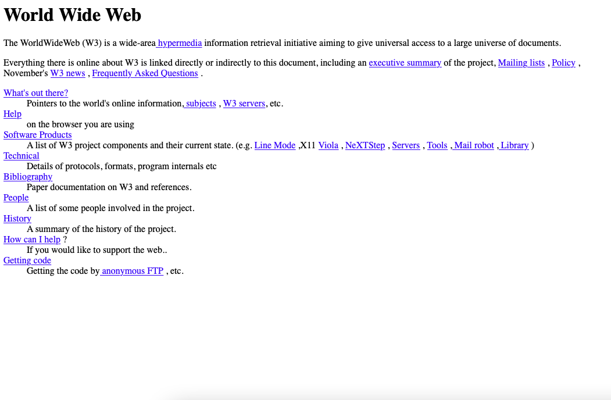
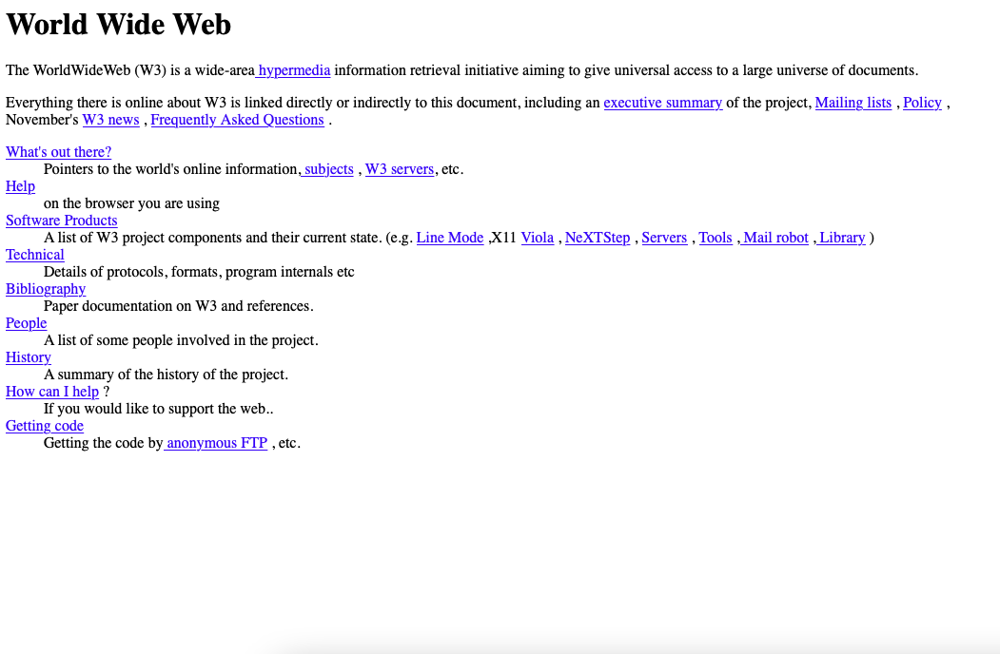

Naviguer parmi une collection :
rêves de Babels


en ligne
Schéma de représentation de l’hypertexte, Ted Nelson, 1965.

Illustration extraite de VOIT Karl, TagTrees: Improving Personal Information Management Using Associative Navigation [ TagTrees : Améliorer la gestion des informations personnelles à l’aide de la navigation associative ], Thèse dirigée par Wolfgang Slany à la Graz University of Technology, 2012, p.5. Traduction depuis l’anglais par l’auteure. en ligne
en ligne


Prélude
Stop ! Quelle frustration de s’arrêter. Car pour penser : j’accumule.
Pour commencer un projet : je plonge avec délice dans d’infinies collections.
Je ne suis pas la seule : qui ne débute pas par un “moodboard”, un “état de l’art”, une “veille”, puisant avec allégresse dans les collections d’images de Pinterest, taquinant la barre de recherche de Google pour appeler vers soi les informations, feuilletant catalogues et index en quête de pépites…
De toutes ces collections où j’ai été puiser, de tous ces énormes lots d’images et d’informations dans lesquels j’ai pioché, naît un nouvel ensemble : une nouvelle collection, dont les items en mouvements n’ont de sens collectivement que maintenus par le mastic de mes pensées. « Atlas Mnémosyne, » Aby Warburg, 1921 et 1929, photographie d’installation des panneaux dans sa bibliothèque et reproduction du panneau 39/79 «Botticelli. Style idéal» ©Getty - Heritage Images Chaque nouvel arrivant bouleverse le sens du groupe, instable, mouvant ; aucun non plus n’est assuré de rester bien longtemps, mais d’arrivées en départs c’est tout de même l’accumulation qui l’emporte.
Il n’y a pas de fin : plus le temps passe et plus la collection s’étend, plus elle se précise aussi. Alors pourquoi s’arrêter, puisque plus de finesse se trouve sans doute au tournant de la prochaine collecte ?
Et puis, les idées liant les collectés se sont petit à petit concentrées et densifiées. Au point que soudain, on les aperçoit détachées de la collection ; et le projet commence, nous voilà inspiré·e·s !
Ces heures de collectes, ce plaisir de recherche, s’effacent alors très vite. Dans des dossiers, listes et carnets dorment toujours les collectés, présents certes, bien que par la suite fort peu consultés. Mais de ce geste de collectionner, que reste-il ?
Que sont-elles devenues, ces subtiles transactions entre ressources universelles et réserve individuelle, entre collections collectives et collection personnelle ?
Collection de collections
La Bibliothèque de Babel
d'après une nouvelle de Jorge Luis Borges, 1941
L’univers, (que d’autres appellent la Bibliothèque) se compose d’un nombre indéfini, et peut-être infini, de galeries hexagonales, avec au centre de vastes puits d’aération bordés par des balustrades très basses. De chacun de ces hexagones on aperçoit les étages inférieurs et supérieurs, interminablement. La distribution des galeries est invariable. Vingt longues étagères, à raison de cinq par côté, couvrent tous les murs moins deux : leur hauteur, qui est celle des étages eux-mêmes, ne dépasse guère la taille d’un bibliothécaire normalement constitué. Chacun des pans libres donne sur un couloir étroit, lequel débouche sur une autre galerie, identique à la première et à toutes. [...] Chacun des murs de chaque hexagone porte cinq étagères : chaque étagère comprend trente-deux livres, tous de même format ; chaque livre a quatre cent dix pages ; chaque page, quarante lignes, et chaque ligne, environ quatre-vingts caractères noirs. [...] il n’y a pas, dans la vaste Bibliothèque, deux livres identiques. De ces prémisses incontroversables il déduisit que la Bibliothèque est totale, et que ses étagères consignent toutes les combinaisons possibles des vingt et quelques symboles orthographiques (nombre, quoique très vaste, non infini), c’est-à-dire tout ce qu’il est possible d’exprimer, dans toutes les langues. Tout : l’histoire minutieuse de l’avenir, les autobiographies des archanges, le catalogue fidèle de la Bibliothèque, des milliers et des milliers de catalogues mensongers, la démonstration de la fausseté de ces catalogues, la démonstration de la fausseté du catalogue véritable, l’évangile gnostique de Basilide, le commentaire de cet évangile, le commentaire du commentaire de cet évangile, le récit véridique de ta mort, la traduction de chaque livre en toutes les langues, les interpolations de chaque livre dans tous les livres.
Quand on proclama que la Bibliothèque comprenait tous les livres, la première réaction fut un bonheur extravagant. Tous les hommes se sentirent maîtres d’un trésor intact et secret. il n’y avait pas de problème personnel ou mondial dont l’éloquente solution n’existât quelque part : dans quelque hexagone. L’univers se trouvait justifié, l’univers avait brusquement conquis les dimensions illimitées de l’espérance. [...] A l’espoir perdu succéda, comme il est naturel, une dépression excessive. La certitude que quelque étagère de quelque hexagone enfermait des livres précieux, et que ces livres précieux étaient inaccessibles, sembla presque intolérable. [...] Peut-être suis-je égaré par la vieillesse et la crainte, mais je soupçonne que l’espèce humaine – la seule qui soit – est près de s’éteindre, tandis que la Bibliothèque se perpétuera : éclairée, solitaire, infinie, parfaitement immobile, armée de volumes précieux, inutile, incorruptible, secrète.
La Bibliothèque de Babel
, nouvelle de Jorge Luis Borges, 1941.
Borgès s’inspire de l’idée de Kurd Lasswitz en 1904 d’une Bibliothèque universelle
: le nombre de combinaisons possibles avec des caractères donnés est limité. Donc, toute littérature possible doit nécessairement pouvoir être contenue dans un nombre de volumes fini.
La Bibliothèque de Babel a inspiré à son tour l’auteur et codeur Jonathan Basile qui propose depuis 2015 un site web régi par un algorithme qui simule le principe de cette bibliothèque. A ce jour, Libraryofbabel répertorie 4,7 × 10, 4 679 pages différentes dont certaines forment du sens.
La Bibliothèque d’Alexandrie
bibliothèque fondée en 288 avant notre ère et détruite vers le 6ème siècle
La célèbre bibliothèque d’Alexandrie n’était ouverte qu’aux savants ou aux poètes connus par des ouvrages d’un mérite quelconque. Mais aussi l’hospitalité y était complète, et ceux qui venaient y consulter les auteurs étaient logés et nourris gratuitement pendant tout le temps qu’il leur plaisait d’y séjourner.
Gérard de Nerval
On raconte que Ptolémée, alors roi d’Égypte, était si fier de ses livres, qu’il avait ordonné que les livres de toute personne qui débarquait lui soient apportés, qu’on en fasse une nouvelle copie sur papyrus, que ce soit la copie qui soit restituée à leur propriétaire […] Ce Ptolémée mit beaucoup d’ardeur dans l’acquisition de tous les livres anciens comme en témoigne bien le récit de ce qu’il fit aux Athéniens : leur ayant versé une caution de quinze talents d’argent en échange des exemplaires de Sophocle, d’Euripide et d’Eschyle pour en faire une unique copie avant de les rendre immédiatement en parfait état, il fit copier à grands frais sur le plus beau des papyrus ; il garda ce qu’il avait reçu des Athéniens et leur renvoya les copies, les invitant à garder les quinze talents et à accepter, à la place des anciens exemplaires qu’ils lui avaient donnés, les neufs.
Claude Galien
Symboliquement, le monde antique fini avec la destruction de la bibliothèque d’Alexandrie.
Alberto Manguel
Le plus frappant reste, pour l’historien des bibliothèques, que ce monde totalement disparu a pourtant constitué l’horizon rêvé des bibliothèques et de la culture livresque des siècles durant, que le Musée d’Alexandrie s’est imposé comme un véritable mythe, et que le modèle de sa bibliothèque perdure dans les fondations les plus contemporaines.
Frédéric Barbier
Nous osons dire que si les anciens eussent exécuté une Encyclopédie comme ils ont exécuté tant de grandes choses, et que ce manuscrit se fût échappé seul de la fameuse bibliothèque d’Alexandrie, il eût été capable de nous consoler de la perte des autres.
Denis Diderot
Qu’on se figure un bibliomane passionné transporté tout à coup dans cette fameuse bibliothèque d’Alexandrie brûlée par Omar et qu’un miracle aurait fait renaître de ses cendres !
Jules Verne
Je me prosterne devant les grands écrivains et devant les grands poètes ; et pourtant il est des jours où, à l’aspect de certaines âmes naïves et saintement ignorantes, je brûlerais volontiers la bibliothèque d’Alexandrie.
George Sand
En octobre 2002, était inaugurée à Alexandrie, sous l’égide de l’Unesco, la nouvelle Bibliotheca Alexandrina. Son architecture entièrement cylindrique, sa forêt de colonnes soutenant un dôme de granit, en forme de disque solaire, ses quelque 80 000 mètres carrés, ne ressemblent probablement pas à son ancêtre mythique, mais après tout nous n’en savons rien. De l’antique
Cécile Marcoux
bibliothèque
d’Alexandrie fondée en 288 av. J.-C., aujourd’hui encore, nous ignorons presque tout : son architecture, son emplacement exact, son contenu, son mode de fonctionnement, même sa destruction, relèvent de suppositions, d’extrapolations, d’interprétations, voire quelquefois de l’imagination.
[...] Depuis deux mille ans, elle est l’objet d’une abondante littérature : récits de voyageurs, analyses d’historiens, archéologues, philosophes, et mêmes bibliothécaires, quelques-uns fondés, d’autres complètement fantaisistes, comme si, dès sa fondation, Babel du savoir universel, elle était déjà légende, identifiée à son corollaire biblique.
La bibliothèque d’Alexandrie, fondée en 288 avant notre ère à Alexandrie, en Égypte, et définitivement détruite au plus tard entre 48 avant notre ère et 642 après, est selon Wikipédia la plus célèbre bibliothèque de l’Antiquité et réunissait les ouvrages les plus importants de l’époque
. On estime leur nombre des rouleaux de Papyrus qui la composaient entre 40 000 et 400 000 à son apogée. L’histoire de sa destruction, presque plus que celle de son existence, marque l’imaginaire collectif autant chez des auteurs comme Nerval, Verne et Sand et des savants comme Diderot et Voltaire, que pour les bibliothécaires et les historiens.
Claude Galien, In Hippocratis librum sextum epidemiarum commentarii, premier siècle ap. J.-C
Gérard de Nerval, Les Filles du feu, 1856
Alberto Manguel, Dans la forêt du miroir, 2000
Frédéric Barbier, Histoire des bibliothèques. D’Alexandrie aux bibliothèques virtuelles, 2016
Denis Diderot, Prospectus présentant le projet de l’Encyclopédie, 1875
George Sand, Lettres d’un voyageur, 1837
Jules Verne, Voyage au centre de la Terre, 1867
Cécile Marcoux, Alexandrie, poïétique des savoirs
, 2014
Le Palais Mondial du Mundaneum
Paul Otlet, vers 1920
En 1920 s’ouvre au Palais du cinquantenaire, sous le nom de Palais mondial – Mundaneum, un curieux temple dédié au savoir, à l’enseignement et à la fraternité universelle, et destiné à accueillir et diffuser les fonds documentaires rassemblés avant la guerre. [Paul Otlet] en est persuadé, les musées doivent devenir “des livres à trois dimensions, comme les livres transformés par leurs abondantes illustrations sont devenus de véritables musées graphiques”. Ébauche de “musée universel encyclopédique” dont il rêve, le Palais mondial tente de faire connaître, à travers soixante-cinq salles quelque peu bricolées, la civilisation de tous les pays. [...] Vivant au milieu des fiches, Otlet veut penser le monde. Absorbé par une tâche de calligraphe dont il sent confusément qu’il ne pourra venir à bout, il se lance dans une fuite en avant de plus en plus éperdue. À la mesquinerie de son quotidien, aux tracasseries dont il commence à être victime, il va opposer une rêverie de plus en plus grandiose. [...]
“La Cité mondiale, observatoire et miroir de la vie nouvelle du monde, serait établie en un lieu extériorialisé. Elle serait pour les affaires temporelles ce que sont la Cité vaticane et les cités religieuses de La Mecque, Jérusalem et Bénarès pour les affaires spirituelles. La Cité mondiale sera un livre colossal, dont les édifices et leurs dispositions – et non seulement leur contenu – se liront à la manière dont les pierres des cathédrales se lisaient
par le peuple au Moyen Âge. Et ainsi vraiment une édification immense s’élèverait avec le temps : de la fiche à la Cité mondiale.”
[...]
“Ici, la table de travail n’est plus chargée d’aucun livre. À leur place se dresse un écran et à portée un téléphone. Là-bas au loin, dans un édifice immense, sont tous les livres et tous les renseignements... De là, on fait apparaître sur l’écran la page à lire pour connaître la réponse aux questions posées par téléphone, avec ou sans fil. Un écran serait double, quadruple ou décuple s’il s’agissait de multiplier les textes et les documents à confronter simultanément ; il y aurait un haut-parleur si la vue devait être aidée par une donnée ouïe, si la vision devait être complétée par une audition. Utopie aujourd’hui, parce qu’elle n’existe encore nulle part, mais elle pourrait bien devenir la réalité pourvu que se perfectionnent encore nos méthodes et notre instrumentation. Et ce perfectionnement pourrait aller jusqu’à rendre automatique l’appel des documents sur l’écran, automatique aussi la projection consécutive.”
Bientôt, assure Otlet, c’est tout le champ du savoir qui se trouvera bouleversé, dès lors qu’un “Réseau universel d’information et de documentation” permettra de “relier les uns aux autres les centres producteurs, distributeurs, utilisateurs, de toute spécialisation et de tout lieu”. Une immense machinerie, formée “par la combinaison des différentes machines existantes, dont les liaisons nécessaires s’entrevoient”, suscitera “un véritable cerveau mécanique et collectif”.
[...] “devant l’abondance des documents, le besoin s’impose de les résumer et d’en coordonner les matériaux en une Encyclopédie universelle et perpétuelle. Une telle encyclopédie, monument élevé à la pensée humaine et matérialisation graphique de toutes les sciences et de tous les arts, est l’étape ultime. Elle aurait en fait pour collaborateurs tous les penseurs de tous les temps et de tous les pays ; elle serait la somme totale de l’effort intellectuel des siècles.”
Peeters Benoît décrivant les ambitions de Paul Otlet, le bibliographe rêveur
en 2012 ; et Paul Otlet, détaillant lui-même ses intuitions dans son Traité de documentation. Le livre sur le livre, de 1934.
Le Memex
hypothèse de Vannevar Bush, 1945
Imaginons un appareil de l’avenir à usage individuel, une sorte de classeur et de bibliothèque personnels et mécaniques. Il lui faut un nom et créons-en un au hasard, “memex ” fera l’affaire. Un memex, c’est un appareil dans lequel une personne stocke tous ses livres, ses archives et sa correspondance, et qui est automatisé de façon à permettre la consultation à une vitesse énorme et avec une grande souplesse. Il s’agit d’un supplément agrandi et intime de sa mémoire.
Cet appareil est constitué d’un bureau, et s’il peut probablement être actionné à distance, c’est avant tout un meuble sur lequel travailler. Au-dessus, des écrans translucides inclinés permettent la projection de documents pour la lecture. Il y a un clavier et un ensemble de boutons et de leviers. À part cela, il ressemble à un bureau ordinaire.
À une extrémité, on trouve les documents stockés. Leur quantité est prise en charge par l’amélioration du microfilm. Seule une petite partie de l’intérieur du memex est dédiée au stockage, le reste est consacré au mécanisme. Même si l’utilisateur introduit 5000 pages par jour, il lui faudrait des centaines d’années pour remplir la base de données, il peut donc être dispendieux et entrer des éléments librement. [...] N’importe quel livre de sa bibliothèque peut ainsi être trouvé et consulté bien plus facilement que s’il fallait le prendre sur une étagère.
[...] Tout cela est connu, à l’exception de la projection dans le futur des mécanismes et gadgets actuels. Cependant, le memex propose cependant un progrès immédiat, celui d’une indexation associative — l’idée d’avoir une disposition dans laquelle tout objet peut être convoqué à volonté pour sélectionner immédiatement et automatiquement un autre. C’est la caractéristique distinctive du memex. Le processus permettant de lier deux éléments est essentiel. [...] C’est exactement comme si des éléments physiques d’origines diverses avaient été rassemblés pour former un livre. Cependant le memex est plus que cela, puisque n’importe quel élément peut appartenir à de nombreux itinéraires différents. [...]
Des formes inédites d’encyclopédies vont apparaître, prêtes à l’emploi grâce aux intersections des chemins d’associations de documents qui les traversent, prêtes à être transférées dans le memex pour y être amplifiées. [...] L’historien met en parallèle le vaste récit chronologique d’un peuple et un itinéraire en pointillés qui ne relie que les points éminents, et peut suivre à tout moment un réseau lui permettant de parcourir toute l’histoire de la civilisation à une époque particulière. Cela donne naissance à une nouvelle profession d’explorateurs et créateurs d’itinéraires, dont les représentants prennent plaisir à établir des itinéraires utiles dans l’énorme masse des enregistrements communs. L’héritage d’un maître n’est plus seulement ce qu’il apporte au savoir humain, c’est aussi l’ensemble des réseaux et itinéraires lui ayant servi à échafauder sa pensée.”
L’hypothèse de ce “Memex” est formulée dans le célèbre article As we may think
[“Comme nous pourrions le penser”] de Vannevar Bush, alors directeur du Département de la Recherche Scientifique et du Développement des États-Unis, paru en 1945. Un mois avant les bombardements atomiques d’Hiroshima et Nagasaki, l’auteur y incite les scientifiques à se projeter dans l’après-guerre avec optimisme. Le Memex, jamais réalisé en tant que tel, marquera néanmoins fortement les développement techniques qui suivirent, comme par exemple les travaux de l’ingénieur Douglas Engelbart, pionnier de l’interaction homme-machine et des interfaces utilisateur.ices, ou de périphériques comme la souris d’ordinateur par exemple.
Le World Wide Web
Tim Berners-Lee au CERN, 1989
 

Je n’ai fait que prendre le principe d’hypertexte et le relier au principe du tcp [le protocole de contrôle de transmission] et du dns [le système de noms de domaine] et alors – boum ! – ce fut le World Wide Web !
J’ai toujours voulu qu’il [ le Web] soit plus qu’un outil seulement pour les scientifiques. Je voulais lier tout à tout. Depuis mon enfance, je pensais que les ordinateurs n’étaient pas bons pour faire des liens, contrairement au cerveau humain. Si vous avez une discussion dans un café et que vous y retournez cinq ans après, votre cerveau fera la connexion et vous vous souviendrez de la discussion. Je voulais construire quelque chose qui avait la propriété de lier n’importe quoi. Je ne m’attendais pas à ce qu’il soit utilisé pour tout lier ! Le point fort du Web, c’est qu’il est neutre, il a pu être utilisé pour poster des articles, des images, des vidéos, des données, des cartes… C’est pour cela que tout est en ligne désormais.
Le World Wide Web ( littéralement la toile (d’araignée) mondiale
, abrégé www ou le Web), est un système hypertexte public fonctionnant sur Internet. Le Web permet de consulter, avec un navigateur, des pages accessibles sur des sites. L’image de la toile d’araignée vient des hyperliens qui lient les pages web entre elles. Inventé en 1989-1990 par Tim Berners-Lee assisté de Robert Cailliau à l’Organisation européenne pour la recherche nucléaire (CERN), il sera rendu public en 1993 et se répandra avec le premier navigateur public, NCSA Mosaic.
Les Archives du Web
Brewster Kahle et la fondation Internet Archive, depuis 1996
Les premiers manuscrits de la Bibliothèque d’Alexandrie ont été brûlés, une grande partie des premières impressions n’a pas été conservée et de nombreux premiers films ont été recyclés pour leur teneur en argent. Alors que le World Wide Web d’Internet est sans précédent dans la diffusion de la voix populaire de millions de personnes qui n’aurait jamais été publiée auparavant, personne n’a enregistré ces documents et images il y a 1 an. L’histoire des premiers matériaux de chaque médium est celle de la perte et de la reconstruction partielle éventuelle à travers des fragments. Un groupe d’entrepreneurs et d’ingénieurs ont décidé de ne pas laisser cela arriver aux débuts d’Internet.
[...] Si l’exemple des bibliothèques papier est un guide, cette nouvelle ressource offrira un aperçu de l’activité humaine et conduira à la création de nouveaux services. Jamais auparavant ce riche artefact culturel n’avait été aussi facilement disponible pour la recherche. Là où les historiens ont éparpillé des bulletins et des dépliants de clubs, des journaux physiques et des lettres d’époques passées, le World Wide Web offre une collection substantielle facile à rassembler, à stocker et à parcourir par rapport à ses antécédents papier. De plus, à mesure qu’Internet devient un système de publication sérieux, ces archives et autres similaires seront également disponibles pour servir des documents qui ne sont plus mprimé
.
[...] En fin de compte, notre objectif est d’aider les gens à répondre à des questions difficiles. Pas uel est mon solde bancaire ?
, ou ù puis-je acheter les chaussures les moins chère
, ou ù est mon ami Bill ?
- ceux-ci seront répondus par des services commerciaux plus petits. Répondez plutôt aux questions difficiles telles que : evrais-je retourner aux études supérieures ?
ou omment dois-je élever mes enfants?
ou uel livre devrais-je lire ensuite ?
. Des questions comme celles-ci peuvent être éclairées par les expériences des autres. Les machines et les bibliothèques numériques peuvent-elles vraiment aider à répondre à ces questions ? À long terme, nous croyons que oui, mais peut-être dans de nouvelles voies qui auraient de l’importance dans l’éducation et la vie de tous les jours. Le web est la ressource n° 1 pour les gens. C’est ainsi que les étudiants apprennent, que les affaires se font. Si nous ne disposons pas de la mémoire du web, alors nous vivons dans un monde à la Orwell, que nous aurons nous-mêmes créé.
Un projet à long terme pour sauvegarder internet devrait ouvrir la voie à de nouveaux servicesr, manifeste de l’Archive d’Internet par Brewster Kahle en 1996.
Internet Archive (ou IA) est un organisme à but non lucratif consacré à l’archivage du Web. Ces archives électroniques sont constituées de copies de pages web prises à différents moments. Fondée en 1996 par Brewster Kahle, sa Wayback Machine (littéralement “la machine à revenir en arrière”) permet aux utilisateurs de voir les versions archivées de pages Web à travers le temps tel un index à trois dimensions
.
Lorsque diverses institutions à travers le monde se sont mises à constituer des dépôts légaux nationaux du Web, Internet Archive leur a partagé ses collections correspondantes récoltées au préalables, comme pour la Bibliothèque Nationale de France en 2006.
Les “Dossiers” de “Fichiers” du “Bureau”
analyse de Karl Voit, 2012-2018
Dans l’histoire des anciens ordinateurs jusqu’aux années 70, ces machines massives et coûteuses étaient exploitées par des personnes très instruites. L’”interface” se composait de nombreux commutateurs, de petites lampes, de cartes perforées, d’imprimantes et, plus tard, de claviers. C’était une chose compliquée à faire. [...]
Avec l’introduction de la métaphore du bureau et des interfaces utilisateur graphiques dans les années 1970, les gens normaux ont commencé à être capables de faire fonctionner cette chose complexe appelée ordinateur. “The Xerox Star user interface which commercialized the desktop metaphor”, Capture d’écran de l’interface utilisateurice Xerox Star, vers 1970. C’était une astuce ingénieuse pour réutiliser les connaissances du monde réel des gens. L’écran d’ordinateur affichait maintenant un environnement familier avec un bureau qui contenait des choses comme un dossier papier, des tiroirs menant à des choses stockées, il offrait la possibilité d’arrangements spatiaux de documents, et ainsi de suite.
Icones de l’Interface du Xerox Star, vers 1970 Il ne fait aucun doute que la métaphore du bureau a été un grand pas en avant dans le développement d’une interface informatique utilisable par l’homme pour les masses. [...]
Depuis, le monde a évolué. Les gens utilisent le World Wide Web où il n’y a plus de référence à aucun système physique. Les utilisateurs de pages Web d’achat ne sont plus irrités par le fait qu’un même appareil photo numérique puisse apparaître sur différentes pages : celle des appareils photo numériques, celle des articles en promotion, celle de l’équipement de bureau, celle des outils d’extérieur, etc.
Voici l’inconvénient de la métaphore du bureau qui domine encore aujourd’hui les interfaces du système d’exploitation en général et les fonctionnalités du système de fichiers en particulier. Dans le monde réel, tout n’est disponible qu’à un seul endroit. Mon portefeuille est soit sur mon bureau, dans mon tiroir, dans la voiture ou dans ma poche. Malheureusement, il ne peut pas être sur chacun de ces spots en parallèle.
Toujours s’en tenir à la métaphore du bureau ressemble maintenant à une limitation inutile. Un seul fichier n’est accessible qu’à un seul endroit dans la hiérarchie de mon système de fichiers. Le fichier se trouve soit dans mon dossier Bureau, soit dans mon répertoire personnel, soit dans tout autre répertoire. Il reste encore une énorme quantité d’informations sur les disques durs locaux, organisées de manière traditionnelle : classement dans une hiérarchie de dossiers. Organiser jusqu’à quelques centaines de fichiers dans une hiérarchie de dossiers ne semble pas être un problème. Avoir des centaines de milliers de fichiers dans la même hiérarchie est un problème.
Desktop Views, Adam Cruces, 2012. Collection des capture d’écran des bureaux d'ordinateur de Micah Schippa, Michael Ray-Von, Kate Steciw, Yannic Joray, Hanna Terese Nilsson, Billy Rennekamp, Marisa Olson, Chris Coy, Travess Smalley, Ida Lehtonen, Eilis McDonald, Lorenzo Bernet, Constant Dullaart.
Karl Voit, spécialiste de la gestion des informations personnelles (“Personal Information Management” ou PIM) décrit l’organisation de documents informatiques dans son article en ligne La métaphore du Bureau d’ordinateur : autrefois géniale, aujourd’hui gênante
en 2018, et dans sa thèse de 2012 TagTrees : Améliorer la gestion des informations personnelles à l’aide de la navigation associative.
Le Web sémantique
description du concept de Bernes-Lee par Caroline Moureaux-Néry
Qu’est-ce que le web sémantique ? C’est l’idée d’utiliser le web pour partager des données plutôt que des documents. Il est défini par Tim Berners-Lee en 2001. Il s’agit d’une extension du web actuel dont les modalités d’application restent largement débattues entre experts. Le web sémantique repose sur l’idée que partager des données brutes au lieu des seuls documents (les pages web), permet de trouver des réponses à des questions inédites. [...] Sur le web, je ne trouverai pas forcément de réponse car la question n’a peut-être encore jamais été posée. Pourtant, les données nécessaires à la formulation d’une réponse existent déjà. Pour répondre, je devrai alors collecter les données de sources différentes, les combiner dans un tableau et trouver le moyen de donner du sens à cette sélection. Un développeur pourrait coder un algorithme capable de récupérer automatiquement les données depuis la multitude de pages web correspondantes, puis de les agréger d’une manière qui a du sens. [...] Le web sémantique se conçoit à l’échelle du web. Il nourrit l’ambition d’interconnecter toutes les données existant sur le web, l’idée étant de décloisonner les silos de connaissances. Il repose donc sur deux éléments. En premier lieu, il faut un format commun, permettant de partager des données en ligne et surtout de lire les relations entre ces données
Il s’agit du linked data ou web des données : une collection de jeux de données reliés les uns aux autres, qui se base sur les standards du web (XML, HTML, RDF...). Mais pour que le web sémantique existe, il faut surtout une large quantité de données accessibles. [...]
Celui-ci pose néanmoins deux questions essentielles sur lesquelles son inventeur ne se prononce pas. Premièrement, que deviennent les données personnelles dans cet océan de données interconnectées et interconnectables? Si le web actuel pose déjà des menaces sur l’utilisation et le respect des données personnelles, le web sémantique en pose potentiellement encore davantage. La deuxième interrogation que soulève le web sémantique est de savoir à quoi ressembleront ses interfaces, car filtrer et organiser des données pour faire émerger de futures interfaces seront-elles assez intuitives pour être utilisées par tout un chacun, resteront-elles destinées à un public expert, ou pousseront-elles à former dès l’école à la manipulation de données ?
Caroline Moureaux-Néry décrit l’idée née en 2001 du Web sémantique dans un aparté de son mémoire de World Wide Web en 2020. Quelques projets exploitent cette idée sans qu’aucun ne se soit développé à l’échelle envisagée par Berners-Lee. Le concept se développe également à d’autres échelles, comme pour gestion des données personnelles sans classement, uniquement orientée sur la recherche.
Des Favoris, des étiquettes et des souvenirs
enquête de Samuel Beguin, 2021
L’autre jour, au moment où j’allais lancer un partage d’écran de ma fenêtre Firefox pendant une réunion j’ai masqué ma barre de favoris. [...] Pourquoi j’ai ressenti une gêne à l’idée que d’autres puissent voir l’organisation et le nom que j’ai donnés à des dossiers dans lesquels j’archive des liens qui me font rire, m’intéressent ou dont je veux garder une trace ?
[...] J’ai donc eu envie de savoir quel rapport entretenaient les gens avec leurs favoris en menant une petite enquête. [...] J’ai pu récolter une vingtaine de captures d’écran de marques-pages. À partir de cette sélection, pas du tout représentative, j’ai essayé de tirer des premiers constats.
J’observe principalement trois types d’usager·es :
D’abord, des efficaces, qui utilisent principalement la barre des favoris, et s’en servent comme un moyen d’accéder plus rapidement aux sites qu’iels utilisent le plus. Viennent ensuite les spontanés. Elles et eux ont une utilisation mixte des favoris. C’est avant tout un moyen d’accès rapide, mais ponctuellement ils et elles vont créer des dossiers pour archiver quelques liens. Pour finir, nous avons les archivistes. Dans une démarche d’archivage, on retrouve dans leurs favoris un enchevêtrement compliqué de dossiers et de sous-dossiers plus ou moins bien rangés. Ils contiennent des dizaines de liens vers des contenus lus, à lire ou dont ils et elles veulent se souvenir.
[...] Mais reste tout de même une autre question : pourquoi est-ce qu’une partie d’entre nous a tant besoin de stocker autant de marques-pages ?
[...] Je fais l’hypothèse que nos favoris sont donc une manière parmi d’autres pour singulariser notre usage du web, pour le rendre intelligible et faire face à une forme de FOMO (Fear of Missing Out, la peur de rater quelque chose) que l’on peut ressentir face à l’immensité de tout ce que nous ne découvrirons jamais sur internet. [...] Cette pratique n’implique même pas forcément de lire ce que l’on archive, la simple action d’archiver semble suffir et nombreux sont celles et ceux qui m’ont raconté avoir un dossier ra
rempli de liens qu’ils et elles ne liraient probablement jamais. [...] En continuant d’archiver des liens, j’ai l’impression de me construire une petite carte de l’internet qu’ils arpentent.
Samuel Beguin -compatriote enscien- décrit sa collecte des collections de Favoris enregistrés dans les navigateurs Web d’une vingtaine de personnes en 2021, dans son article en ligne “Des favoris, des étiquettes et des souvenirs”.
Albums - collection
Annette Messager, 1970
Dans une vitrine pleine de chemises en carton, sans ornements et liées par des rubans, sur chacune desquelles la main d’une femme a écrit des titres tels que : “Les hommes que j’aime” ; “Les hommes que je n’aime pas” ; “Les femmes que j’admire” ; “Mes jalousies” ; “Mes dépenses quoti diennes” ; “La mode que j’aime” ; “Mes dessins d’enfance” ; “Mes châteaux”, et même : “Les papiers qui enveloppaient les oranges que j’ai mangées”. Ce que ces dossiers contiennent n’est pas un mystère, puisqu’il ne s’agit pas d’une exposante occasionnelle, mais d’une artiste professionnelle ( “Annette Messager; collectionneuse” : c’est ainsi qu’elle signe), qui a fait de ses séries de coupures de journaux, feuillets de notes et croquis plusieurs expositions personnelles à Paris et à Milan. Mais ce qui nous intéresse à présent, c’est justement cette étendue de chemises fermées et étiquetées, ainsi que le procédé mental qu’elles impliquent. L’auteur elle-même l’a clairement défini : “J’essaie de posséder et de m’approprier la vie et les événements venus à ma connaissance. Pendant toute la journée je feuillette, collationne, mets en ordre, classe, trie, et je réduis tout cela sous forme d’autant d’albums de collection. Ces collections deviennent alors l’illustration de ma vie.” Ses journées, minute après minute, pensée après pensée, réduites en collection : la vie broyée en une poussière de grains
.
Description de l’exposition des Albums-Collections d’Annette Messager à Paris dans les années 1970 par Italo Calvino dans le court essai Collection de sable
, en 1974.
Le cycle Annette Messager collectionneuse, débuté à la fin des années 1960, compte 56 albums comprenant chacun des images, coupures de presse, photographies, etc. minutieusement classés. L’artiste endosse le rôle de la femme au foyer, une femme qu’elle n’est pas.
Collection de Sable
description d'Italo Calvino, vers 1970
Il existe une personne qui fait collection de sable. Elle voyage à travers le monde, et lorsqu’elle arrive sur une plage au bord de la mer, sur les rives d’un fleuve ou d’un lac, dans un désert ou une lande, elle ramasse une poignée de sable et l’emporte avec elle. [...] Du monde, la récolte des sables choisis enregistre le résidu de longues érosions qui est en même temps l’ultime substance et la négation de son apparence luxuriante et multiforme tous les décors de la vie du collectionneur y apparaissent plus vivants que dans une série de diapositives en couleurs [...] Comme toute autre collection, celle-ci aussi est un journal : journal de voyages, certes, mais tout autant journal de sentiments, d’états d’âme, d’humeurs; même si nous pouvons être sûrs qu’il existe vraiment une correspondance entre le sable froid couleur de terre de Leningrad, ou le sable très fin couleur de sable de Copacabana, et les sentiments qu’ils évoquent à les voir là mis en bouteille et étiquetés. Ou peut-être simple journal de cette obscure et folle envie qui pousse tout autant à rassembler une collection qu’à tenir un journal, c’est-à-dire du besoin de transformer le cours de sa propre existence en une série d’objets sauvés de la dispersion, ou en une série de lignes écrites, cristallisées en dehors du flux continu des pensées. Le charme fascinant qu’exerce une collection réside en ce peu qu’elle révèle et en ce peu qu’elle cache de l’élan secret qui a conduit à la créer.
Description d’une collection de sable amateur exposée à Paris dans les années 1970, racontée par Italo Calvino dans le court essai Collection de sable
, en 1974.
Le Collectionneur de collections
Henri Cueco, 1980-2005

nous eûmes, stimulés par notre mesquinerie jalouse, l’idée de collectionner des collections
Parfois, les boîtes débordent d’une sorte d’écume d’objets qui dépassent, obligeant à des expurgations, des classements. Des boîtes en carton, des boîtes à cigares, des boîtes à chaussures sont alors remplies d’objets triés tant bien que mal. Se pose cependant aux obsessionnels la célèbre question des classements dans une même catégorie : par fonction, par lettre alphabétique, par taille, par couleur, par forme ?
Récit autobiographique de l’expérience de collectionneur de Henri Cueco, auteur et peintre, et de sa compagne Marinette Cueco, artiste, dans un ouvrage de 2005 intitulé Le Collectionneur de collections.
Il y décrit par exemple sa pratique de collectionneur de queues de cerises, de bouts de ficelle, de chaussures éculées, d’éponges usagées, de cailloux, de restes de crayons de papier… Le collectionneur peint ses propres collections, et écrit également sur elles.
- BORGES Jorge Luis, « La Bibliothèque de Babel » in Fiction, 1981 [1944], Gallimard, folio, pp. 91-101. Traduit de l’espagnol par P. Verdevoye er Ibarra.
- LASSWITZ Kurd , « La bibliothèque universelle », nouvelle publiée dans la Nouvelle Revue Française n°565, avril 2003 [1904], pp. 337-351. Traduction par François-Guillaume Lorrain. [ en ligne ]
- BASILE Jonathan, Library of Babel, site web, 2015. [ en ligne ]
- Voir : en ligne
- DE NERVAL Gérard, Les Filles du feu, 1856, éd. Michel Lévy frères, Angélique, Première lettre, p. 8-9.
- GALIEN Claude, « Galeni In Hippocratis Epidemiarum librum III commentaria III », Corpus Medicorum Graecorum V, 10, 2, 1, p. 78-80. Traduction de Jean-Luc Fournet, dans BALLET Pascale, La Vie quotidienne à Alexandrie (-331/-30), 2003, Hachette, collection « Pluriel », p. 120. [ en ligne ]
- MANGUEL Alberto, Dans la forêt du miroir. Essai sur les mots et sur le monde, 2000, Actes Sud.
- BARBIER Frédéric, Histoire des bibliothèques. D’Alexandrie aux bibliothèques virtuelles, 2014, Armand Colin, Collection U.
- DIDEROT, « Prospectus présentant le projet de l’Encyclopédie raisonnée des arts et des sciences. » in Œuvres complètes de Diderot, 1875-1877, tome XIII, p. 139-140, éd. Garnier. Texte établi par J. Assézat et M. Tourneux.
- VERNE Jules, Voyage au centre de la Terre, 1867, chapitre XXXVI, p. 180, éd. Hetzel.
- SAND George, Lettres d’un voyageur, « Œuvres complètes de George Sand », 1869 [1837], Lettre VII, éd. Michel Lévy frères, p. 204.
- MARCOUX Cécile, « Alexandrie, poïétique des savoirs », in Revue française de psychanalyse, 2014/2 (Vol. 78), p. 502-509. [ en ligne ]
- WIKIPÉDIA « Bibliothèque d’alexandrie », Français, consulté le 17 février 2022. [ en ligne ]
- OTELET Paul, Traité de documentation. Le livre sur le livre, 1934, Bruxelles, Éditions Mundaneum, pp. 419-420.
- OTELET Paul, Traité de documentation. Le livre sur le livre, 1934, Bruxelles, Éditions Mundaneum, p. 428.
- Ibidem.
- BENOÎT Peeters, « Paul Otlet. Le bibliographe rêveur », article de la Revue de la BNF, 2012/3 (n° 42), p. 5-12. [ en ligne ]
- BUSH Vannevar, « As we may think » [“Comme nous pourrions le penser”], article du journal The Atlantic Monthly, volume 176, No 1, juillet 1945, p. 101-108. [ en ligne ] Traduction intégrale par MASURE Anthony dans sa thèse Le design des programmes, des façons de faire du numérique, dirigée par Pierre-Damien Huyghe, Université Paris 1 Panthéon-Sorbonne. [ en ligne ]
- Ibidem.
- MASURE Anthony, Le design des programmes, des façons de faire du numérique, Thèse dirigée par Pierre-Damien Huyghe, Université Paris 1 Panthéon-Sorbonne. [ en ligne ]
- WARDRIP-FRUIN, Noah et MONTFORT, Nick, The New Media Reader, 2003, The MIT Press.
- T. Berners-Lee, cité dans PERRIN Olivier « Le Web libre et ouvert fête ses 20 ans », article dans la revue en ligne Le Temps, 1ermai 2013. [ en ligne ]
- Tim Berners-Lee cité dans UNTERSINGER Martin, « 30 ans du Web : “Il n’est pas trop tard pour changer le Web”, affirme Tim Berners-Lee », entretien avec Tim Berners-Lee pour la revue en ligne du Monde du 12 mars 2019. [ en ligne ]
- BERNERS-LEE Tim et FISCHETTI Mark , Weaving the Web : the past, present and future of the World Wide Web by its inventor [Tisser la toile, la conception originale et la destinée ultime du World Wide Web par son inventeur] , 2000, Londres, Texere.
- KAHLE Brewster, au nom de Internet Archive, Un projet à long terme pour sauvegarder internet devrait ouvrir la voie à de nouveaux services, manifeste de l’Archive d’Internet, 11 avril 1996. Traduction depuis l’anglais par l’auteure. [ en ligne ]
- Brewster Kahle cité dans GREEN Heather, « A Library as Big as the World », article pour la revue en ligne Business Week online, 28 février 2002. Traduction depuis l’anglais par l’auteure. Traduction depuis l’anglais par l’auteure. [ en ligne ]
- KAHLE Brewster, au nom de Internet Archive, Un projet à long terme pour sauvegarder internet devrait ouvrir la voie à de nouveaux services, manifeste de l’Archive d’Internet, 11 avril 1996. Traduction depuis l’anglais par l’auteure. [ en ligne ]
- Ibidem.
- BIBLIOTHÈQUE NATIONALE DE FRANCE, « Archives de l’internet », article du site Web de la BnF, consulté en janvier 2022. [ en ligne ]
- « Notez que «dossier» est plus ou moins synonyme de «répertoire» et vice versa pour les besoins de cette discussion. » VOIT Karl, « The Desktop Metaphor: Once Awesome, Now Hindrance » [ La métaphore du Bureau d’ordinateur : autrefois géniale, aujourd’hui gênante], Article du site personnel de Karl Voir, 2018. Traduction depuis l’anglais par l’auteure. [ en ligne ]
- VOIT Karl, TagTrees: Improving Personal Information Management Using Associative Navigation [ TagTrees : Améliorer la gestion des informations personnelles à l’aide de la navigation associative ], Thèse dirigée par Wolfgang Slany à la Graz University of Technology, 2012, p.5. Traduction depuis l’anglais par l’auteure. [ en ligne ]
- VOIT Karl, « The Desktop Metaphor: Once Awesome, Now Hindrance » [ La métaphore du Bureau d’ordinateur : autrefois géniale, aujourd’hui gênante], Article du site personnel de Karl Voir, 2018. Traduction depuis l’anglais par l’auteure. [ en ligne ]
- VOIT Karl, TagTrees: Improving Personal Information Management Using Associative Navigation [ TagTrees : Améliorer la gestion des informations personnelles à l’aide de la navigation associative ], Thèse dirigée par Wolfgang Slany à la Graz University of Technology, 2012, p.5. Traduction depuis l’anglais par l’auteure. [ en ligne ]
- Tim BERNERS-LEE, « The Semantic Web », Scientific American, 1er mai 2001.
- Aussi appelé web 3.0.
- BERNERS-LEE Tim, « Tim Berners-Lee on the semantic web », MIT Technology Review, 7 mai 2018. [en ligne ]
- MOUREAUX-NÉRY Caroline, World Wide Web, plongée dans les logiques de navigation web, 2020, mémoire de fin d’étude sous la direction de Loup Cellard, ENSCI - Les Ateliers, pp.160-161.
- WIKIPÉDIA « Web sémantique », Français, consulté en février 2022. [ en ligne ]
- par exemple en ligne
- BEGUIN Samuel, « Des favoris, des étiquettes et des souvenirs », article de la newsletter de Samuel Beguin Un dernier onglet et puis j’arrête, 13 mai 2021. [ en ligne ]
- Ibidem.
- Calvino Italo , Collection de sable, 2002 [1974] édition folio, traduit de l’italien par jean paul Manganaro, partie I - EXPLORATIONS - EXPOSITIONS «Collection de sable», pp.9-17. [ en ligne ]
- en ligne 1972-1974
- CALVINO Italo, Collection de sable, 2002 [1974] édition folio. Traduit de l’italien par Jean Paul Manganaro. Partie I - EXPLORATIONS - EXPOSITIONS «Collection de sable», pp.9-17. [ en ligne ]
- CUECO Henri, Le collectionneur de collections, 2005, édition Points, p. 29.
- CUECO Henri, Le collectionneur de collections, 2005, édition Points.
1 - Réver à l’ensemble absolu
Quand on proclama que la Bibliothèque comprenait tous les livres, la première réaction fut un bonheur extravagant. Tous les hommes se sentirent maîtres d’un trésor intact et secret. Il n’y avait pas de problème personnel ou mondial dont l’éloquente solution n’existât quelque part [...]. L’univers se trouvait justifié, l’univers avait brusquement conquis les dimensions illimitées de l’espérance.
« Babylon Bibliotheca », Jean-François Rauzier , 2011, collage “hyperphotographie”
Bien que sous la plume de Borges, la Bibliothèque entraîne plus de désespoir que d’épanouissement, je crois que l’instant d’espérance qu’il décrit se retrouve, intact, dans tous les rêves de Babel. Quel que soit le but d’un ensemble de données, sa dimension est toujours un déterminant crucial, et toujours plane l’ombre d’un ensemble plus parfait encore, plus complet, plus exhaustif…
Commencer par cerner le plus indiscernable ensemble, l’ensemble absolu
, cristallise un étalon indépassable pour l’étude de tout autre ensemble. Débutons donc notre étude avec une collection de collections impossibles, de rêves vertigineux qui laissent malgré tout leurs traces sur nos outils bien réels de gestion de grands ensembles.
Car il n’y a pas que dans la légende de la Tour « La Tour de Babel », Pieter Bruegel le vieux, 1563, Kunsthistorisches Museum de Vienne. ou dans les Fictions de Borges que s’observent des tentatives de Babel : comment ne pas y penser en considérant les vestiges de la Bibliothèque d’Alexandrie, ou bien plus proches, les débuts du Mundaneum de Paul Otlet (1920), l’hypothèse du Memex de Vannevar Bush (1945), ou plus proches de nous encore, les fantasmes encore bien vivaces qui fondent notre Internet ?
Certes ces exemples reposent fortement sur des ensembles textuels, mais parce que le texte est dans la culture occidentale symbole et réceptacle de la pensée, ces exemples s’assimilent à des ensembles de savoirs et n’en sont, à mes yeux, que plus emblématiques.
espoirs humanistes
Outre la recherche d’une justification prétendument rassurante, ou prophétique, qu’esquisse avec cynisme Borges, de tels rêves d’absolus sont souvent fondés sur de grands espoirs humanistes.
Au début du XXème siècle, Paul Otlet rêvait de créer le Mundaneum, bibliothèque universelle réunissant tous les savoirs
. Bénévoles et employées du Mondaneum classant les fiches bibliographiques vers 1920 © Mondaneum Un ensemble absolu s’il en est, puisqu’il a l’intention grandiose de cataloguer intégralement la production bibliographique de tous les temps, de tous les lieux, sur toutes matières
. Avec son concitoyen Henri La Fontaine, il construira ainsi Le Palais Mondial, à Bruxelles, réceptacle de l’utopie du Mundaneum, mais qui n’aboutira jamais dans ses dimensions gigantesques, et finira détruit en 1934. « Vue du Hall principal du Mondaneum à Mons, Belgique »2019 © Mondaneum - Frédéric Raeven
Sans doute le projet confine-t-il à la mégalomanie, et scellait dès ses prémisses son impossibilité, se voulant tout à tour musée universel
, encyclopédie perpétuelle
, monument à la pensée humaine
, étape ultime
, somme totale de l’effort intellectuel des siècles
...
L’échec du projet sous cette forme n’a pourtant pas empêché une autre victoire, plus discrète mais diffuse, de l’universalisme. Son espoir d’unir les savoirs universellement marque le monde bibliographique au-delà des frontières avec le succès, pendant quelques années, de leur Classification Décimale Universelle, système de classement de bibliothèque qui reste encore une référence, même si son utilisation a beaucoup régressé depuis les années 1980. “classification décimale universelle”, « Planches de l’Atlas Monde », Paul Otlet, 1936, Mondaneum ; couverture de OTELET Paul, « Traité de documentation. Le livre sur le livre », 1934, Bruxelles, Éditions Mundaneum Comme le formulait Otlet : Partis de la Bibliographie, nous aboutissions à l’internationalisme. Organiser toutes les forces humaines pour une meilleure humanité, tel était le but général...
. “indexation de publications et rédaction de fiches bibliographiques” « Planche de l’Atlas Monde », Paul Otlet, 1936, Mondaneum
Pour l’ingénieur américain Vannevar Bush, alors qu’il théorise ce qui va préfigurer le Web dans un article de 1945, cette ambition d’absolu devient l’espoir pour l’humanité de développer un savoir commun et de grandir dans la sagesse de l’expérience ainsi accumulée
. Son Memex, hypothèse d’un instrument à rassembler et circuler dans ce savoir immense, semble hériter son espoir de démesure du contexte quasi apocalyptique de la fin de la seconde guerre mondiale. « The design of the Memex [le design du Memex], » Vannevar Bush, 1945« , in » ; BUSH Vannevar, « As we may think » [“Comme nous pourrions le penser”], article du journal « The Atlantic Monthly », volume 176, No 1, juillet 1945, p. 101-108. Double inversé du risque de destruction totale d’une guerre nucléaire, l’assemblage de savoir pourrait s’y opposer pour Bush en atteignant une ampleur aussi titanesque, totale : elle pourrait être vue comme ce qui ramènerait de l’ordre au sein d’un monde divisé.
Le désir de gigantisme, d’absolu derrière ces rêves de Babel, s’explique donc par d’immenses espoirs pacifistes. Mais en plus de ces motivations quasi éperdues, les exemples Babeliens sont aussi emblématiques de la constitution d’ensembles de données car ils reposent sur quelques tropismes plus localisés, que l’on retrouve aussi à l’œuvre même dans des assemblages d’ambitions plus limitées.
curiosité et partage
Comme l’écrit mon amie Caroline Moureau Néry, cet imaginaire d’abondance de connaissance
nous séduit car il exploite notre curiosité naturelle.
Qui n’a jamais rêvé de pouvoir déambuler dans les rayons de la bibliothèque d’Alexandrie ou dans ceux de la bibliothèque de Babel, guidé par la seule envie de découvrir et d’apprendre, pour le plaisir simple d’errer entre ces connaissances et de s’en saisir quand bon lui semble ?
« Bibliothèque idéale 2 », Jean-François Rauzier, 2009 Selon elle, naviguer sur le Web joue également sur cette curiosité naturelle, ce qui explique pourquoi surfer, errer sur le Web, peut aussi être épanouissant et ludique.
Caroline souligne également un autre aspect particulièrement important de notre attirance pour ces Babels : si on peut prendre Internet et le Web pour la bibliothèque ultime
, c’est parce qu’ils constituent les seuls espaces que l’humanité a en commun
. C’est effectivement l’idée de Ted Nelson, inventeur de l’hypertexte, qui rêvait avec son projet Xanadu d’un fond commun rassemblant les écrits de l’humanité entière
.
Schéma de représentation de l’hypertexte, Ted Nelson, 1965. L’important n’est pas seulement dans le rassemblement de savoir, mais l’accessibilité théoriquement universelle à ce lieu commun du monde. Le charme du web, est en effet que tout est [théoriquement] à un clic
. Même Otlet, s’il veut que son Mundaneum soit un lieu ouvert à tous, espère que le savoir qu’il abrite pourra se consulter de partout pour plus d’accessibilité, permettant de lire de chez soi des livres exposés dans la salle “teleg” des grandes bibliothèque, aux pages demandées d’avance. Ce livre sera téléphoté.
L’attraction des ensembles repose donc largement sur l’accessibilité qu’offre leur assemblage, mettant des ressources communes à portée de la main
« Mockup of transpointing windows », Ted Nelson, 1972. Photo des mains de Ted Nelson illustrant sur une maquette le principe d’interconnexion d’hyperliens entre deux documents. au lieu de devoir les débusquer, une par une, dans diverses environnements spécifiques. Et ce rassemblement de ressources permet aussi le rassemblement de ceux qui consultent, se croisant dans un même lieu, réel ou virtuel.
Flâner dans l’inconnu
Un autre aspect encore de l’intérêt pour ces ensembles gigantesques, est sans doute que cette abondance cache toujours une part d’inconnu. Jusqu’à présent, les bénéfices énumérés étaient de l’ordre de ce que permettent de savoir ces accumulations immenses. Mais face à des ensembles énormes, nous sommes face dans un premier temps à ce qu’ils contiennent et que l’on ne connaît pas - ou pas encore.
Si chez Borges l’idée de pouvoir passer à côté d’un savoir précieux peut être intolérable, et désespérante, je ne crois pas que cette idée est forcément négative. Sans doute peut-elle être aussi réconfortante, comme pour Jonathan Rosen pour qui ne pas pouvoir connaître toute la Torah est une part de la leçon de la Torah
. Cela me permet de ressentir une connexion avec un vaste ensemble de savoir dont je ne suis pas le maître, de la même manière que je suis capable de vivre dans une société fourmillante d’informations que je ne pourrais jamais comprendre dans sa totalité.
L’assurance d’une accessibilité possible n’entraîne pas un accès obligé, et je crois que, à l’image des personnages de Borges, ce n’est que quand la curiosité se transforme en frénétique angoisse de perdre que l’immense devient cauchemardesque.
Je pense aussi à Baudelaire, qui malgré le spleen qui l’assaille, éprouve une immense jouissance d’élire domicile dans le nombre, dans l’ondoyant, dans le mouvement, dans le fugitif et l’infini. Être hors de chez soi ; et pourtant se sentir partout chez soi.
Sans doute, dans l’abondance de l’ensemble, est-il épanouissant de ne pas être dans l’insuffisance et la course perpétuelle à la connaissance, mais tel le flâneur
persuadé qu’il restera toujours de l’espace à découvrir.
Ce dernier point cependant, est très différent des idéaux explicites de l’établissement de ces ensembles immenses : au lieu de mettre en valeur leur fondement hyper-collectif et les ambitions totalisantes de la mise en commun absolue, il s’agit de s’intéresser à une expérience individuelle, forcément limitée. Et bien que tacite, on décèle toujours dans ces rêves de Babel l’attention à une dimension plus individuelle.
l’individu subjectif en prise avec le savoir commun
Lors d’une longue méditation sur Internet, Johnatan Rosen se souvient ainsi d’une idée de John Donne “Toute l’humanité est d’un même auteur et un même volume ; quand une personne meurt, ce chapitre n’est pas arraché du livre, mais traduit en un meilleur langage”. Même si j’avais souvent exprimé mon cynisme à propos d’Internet, je rêvais secrètement qu’ils finissent par devenir un analogue virtuel du Paradis de John Donne
confie Rosen.
Je crois que ce qui lui plaît, dans cet idéal d’ensemble, n’est pas tant l’idée d’un tout commun, mais l’affirmation de la singularité de chaque subjectivité, de la distinction et de la reconnaissance de chaque chapitre. Bien que l’aspect totalisant et absolu semble prévaloir dans les ensembles collectifs, je ne pense pas que l’on puisse systématiquement leur prêter un but d’objectivité pure. Otlet, Bush, et même Ted Nelson, n’ignorent pas dans leur rêves l’individu et sa subjectivité en prise avec le savoir commun. Ainsi Vannevar Bush, avec son Memex, pense un MEMory EXtender (extension de mémoire) personnel, appareil à usage personnel « The design of the Memex [le design du Memex], » Vannevar Bush, 1945« , in » ; BUSH Vannevar, « As we may think » [“Comme nous pourrions le penser”], article du journal « The Atlantic Monthly », volume 176, No 1, juillet 1945, p. 101-108. qui privilégie le rangement par association, des rapprochement de ressources purement subjectifs, donc. Au détour de son discours, c’est exactement cette duplicité entre savoir commun objectivisé, et pensée personnelle subjective que met en valeur Bush : L’héritage d’un maître n’est plus seulement ce qu’il apporte au savoir humain, c’est aussi l’ensemble des réseaux et itinéraires lui ayant servi à échafauder à sa pensée. La science permettra ainsi de prendre en compte la manière dont l’humanité produit, stocke et consulte les archives des espèces.
Pour Bush, aussi important que d’accéder à l’ensemble du savoir humain rassemblé, il faut pouvoir observer comment se construit le savoir individuel dans son unicité.
Quoique moins explicitement formulé, dans tous les rêves de Babel se distinguent ces transactions subtiles entre tentative d’objectivité en partage et subjectivité des consultations individuelles.
Foncièrement ancrés dans l’ambition d’assemblage d’ensemble, ces quelques élans pétrissent l’équilibre entre échelle incommensurable collective et parcours sélectif des individus.
Des élans qui se retrouvent même à des échelles d’intention plus modestes que babeliennes : l’espoir d’un impact positif dans le quotidien d’autrui, l’envie d’un lieu commun de ressources accessibles, l’exploitation d’une curiosité pour l’inconnu, le confort d’une abondance présente sans obligation de consommation. Mais aussi une ambiguïté profonde entre l’objectivité potentielle d’un tel ensemble face à la subjectivité de l’individu. Une dualité qui, mettant en contraste commun et personnel, contribue cependant à mettre en valeur l’ensemble. Quel intérêt aurait-il pour une personne, si cet ensemble n’était pas différent d’elle ?
- BORGES Jorge Luis, « La Bibliothèque de Babel » in Fiction, 1981 [1944], Gallimard, folio, p. 96. Traduit de l’espagnol par P. Verdevoye er Ibarra.
- CARDON Dominique, Culture numérique, 2019, Presses de Sciences Po, p. 80.
- OTLET Paul, Notes personnelles, archives du Mundaneum, Mons, circa 1934, cité dans BENOÎT Peeters, « Paul Otlet. Le bibliographe rêveur », article de la Revue de la BNF, 2012/3 (n° 42), p. 5-12. [ en ligne ]
- Ibidem.
- voir glossaire.
- OTLET Paul, Notes personnelles, archives du Mundaneum, Mons, circa 1934, cité dans BENOÎT Peeters, « Paul Otlet. Le bibliographe rêveur », article de la Revue de la BNF, 2012/3 (n° 42), p. 5-12. [ en ligne ]
- BUSH Vannevar, « As we may think » [“Comme nous pourrions le penser”], article du journal The Atlantic Monthly, volume 176, No 1, juillet 1945, p. 101-108. [ en ligne ] Traduction intégrale par MASURE Anthony dans sa thèse Le design des programmes, des façons de faire du numérique, dirigée par Pierre-Damien Huyghe, Université Paris 1 Panthéon-Sorbonne. [ en ligne ]
- MASURE Anthony, Le design des programmes, des façons de faire du numérique, Thèse dirigée par Pierre-Damien Huyghe, Université Paris 1 Panthéon-Sorbonne, chapitre « La pensée associative du memex ». [ en ligne ]
- MOUREAUX-NÉRY Caroline, World Wide Web, plongée dans les logiques de navigation web, 2020, mémoire de fin d’étude sous la direction de Loup Cellard, ENSCI - Les Ateliers, p. 233.
- Ibidem.
- Ibidem.
- Ibidem.
- MOUREAUX-NÉRY Caroline, World Wide Web, plongée dans les logiques de navigation web, 2020, mémoire de fin d’étude sous la direction de Loup Cellard, ENSCI - Les Ateliers, p. 234.
- Ibidem.
- Ibidem.
- OTLET Paul, Notes personnelles, archives du Mundaneum, Mons, circa 1934, cité dans BENOÎT Peeters, « Paul Otlet. Le bibliographe rêveur », article de la Revue de la BNF, 2012/3 (n° 42), p. 5-12. [ en ligne ]
- MOUREAUX-NÉRY Caroline, World Wide Web, plongée dans les logiques de navigation web, 2020, mémoire de fin d’étude sous la direction de Loup Cellard, ENSCI - Les Ateliers, p. 234.
- ROSEN Jonathan, The Talmud and the Internet : A Journey Between Worlds [ Le Talmud et l’internet : un voyage entre les mots ], 2000, New York, Farrar Straus and Giroux.
- ROSEN Jonathan, The Talmud and the Internet : A Journey Between Worlds [ Le Talmud et l’internet : un voyage entre les mots ], 2000, New York, Farrar Straus and Giroux.
- Ibidem.
- BAUDELAIRE Charles, « Le peintre de la vie moderne », texte publié dans la revue Le Figaro en trois épisodes, les 26 et 29 novembre et le 3 décembre 1863.
- ROSEN Jonathan, The Talmud and the Internet : A Journey Between Worlds [ Le Talmud et l’internet : un voyage entre les mots ], 2000, New York, Farrar Straus and Giroux.
- BUSH Vannevar, « As we may think » [“Comme nous pourrions le penser”], article du journal The Atlantic Monthly, volume 176, No 1, juillet 1945, p. 101-108. [ en ligne ] Traduction intégrale par MASURE Anthony dans sa thèse Le design des programmes, des façons de faire du numérique, dirigée par Pierre-Damien Huyghe, Université Paris 1 Panthéon-Sorbonne. [ en ligne ]
2 - L’usage de Babel : qu’y fait-on ?
Appréhender ces exemples vertigineux permet de discerner l’utilité espérée, et les raisons qui motivent leur assemblage. Mais il s’agit aussi de cas particulièrement emblématiques non pas seulement de la finalité, mais aussi de l’usage que l’on projette sur ces ensembles : la prévision de la manière d’interagir avec ces ensembles influe fortement sur la manière dont ils seront conçus, et donc leur nature même.
stocker
Une idée, Vannevar ?
Un enregistrement, s’il doit être utile [...], doit pouvoir être prolongé. Il doit certes être stocké, mais avant tout il doit pouvoir être consulté.
Voilà qui est clair : les ensembles doivent permettre d’une part le stockage, et d’autre part la consultation.
Le stockage tout d’abord semble évident : pour que l’ensemble puisse être considéré comme un tout, il s’agit de ne pas avoir à courir après chacun des éléments dans leur environnement d’origine vérifiant sans cesse qu’on les a cernés, mais d’avoir chacun sous une forme propice et stable, même si cela ne constitue qu’un reflet, une copie à un instant donné de l’élément d’origine : ce que Vannevar nomme un enregistrement
(“record”). Et comme cet enregistrement n’est pas l’élément d’origine, il ne restera pas collé à lui qui est déjà en profonde interaction avec son contexte, mais doit bien aller ailleurs.
Il faut l’entreposer, et si possible, dans une forme maîtrisable : il ne s’agit pas, comme dans une autre nouvelle de Borges, d’avoir une carte de l’Empire de la taille de l’empire
, une telle carte dilatée est un enregistrement plutôt mal stocké, qui empiète sur l’élément réel en étant guère plus maîtrisable que lui, et les générations suivantes comprirent que cette carte dilatée était inutile
. Au contraire, une encyclopédie veut enregistrer le monde sans empiéter sur lui, et Vannevar de rêver que l’encyclopédie Britannica pourrait être réduite au volume d’une boîte d’allumettes ; une bibliothèque d’un million de volumes pourrait tenir dans un coin de bureau
... Un changement de nature et d’échelle qui permet d’abstraire les enregistrements de leurs objets originels.
Consulter, rechercher… naviguer
Mais La simple compression, bien sûr, n’est pas suffisante. Nous n’avons pas seulement besoin de produire et de stocker un enregistrement, mais d’être capable de le consulter
, nous rappelle Bush. Si une compression permet de consulter plus facilement, puisqu’on peut partager les enregistrements, les garder à portée de main, une bibliothèque d’un million de volumes compressée sur un coin de bureau ne m’est pas bien utile si je n’ai rien pour aider mes yeux (eux non compressés) à lire une ligne d’un de ses ouvrages impalpables.
De plus, Vannevar remarque que si consulter nécessite un dispositif pour lire, il faut impérativement un dispositif pour pouvoir chercher dans cet ensemble : trouver, ou retrouver, un enregistrement. Le fait d’avoir entreposé l’enregistrement ne suffit pas, il faut savoir où il est entreposé. Il souligne également que ces dispositifs de consultation vont conditionner l’accessibilité de ces enregistrements: même les remarquables bibliothèques modernes ne sont picorées que par de petits groupes de personnes
, qui maîtrisent les codes de recherche et se sentiront donc à l’aise dans ces lieux. Une dernière facette est nécessaire à la possibilité d’une consultation
: la capacité, une fois arrivé à un enregistrement, de passer à un autre puis un autre, de proche en proche, suivant des qualités communes, par association
. C’est ce que Vannevar appelle navigation
, et qui, à la différence de la recherche qui cible, permet de voir les enregistrements possibles et les proximités entre eux.
En 1945, sans dispositif de stockage et de consultation assez performant à son goût, Vannevar constatait néanmoins leur nécessité : l’agrégation des expériences humaines a pris une ampleur prodigieuse, et les moyens que nous utilisons pour naviguer dans ce labyrinthe de recherches sont les mêmes qu’à l’époque des galères
. « Bibliothèque idéale 2 », Jean-François Rauzier, 2009
- Ibidem.
- BORGES Jorge Luis, « Del rigor en la ciencia » [«De la rigueur de la science»], in Histoire universelle de l’infamie ; Histoire de l’éternité, Paris, 10/18, 1994 [1946], p. 107.
- Ibidem.
- BUSH Vannevar, « As we may think » [“Comme nous pourrions le penser”], article du journal The Atlantic Monthly, volume 176, No 1, juillet 1945, p. 101-108. [ en ligne ] Traduction intégrale par MASURE Anthony dans sa thèse Le design des programmes, des façons de faire du numérique, dirigée par Pierre-Damien Huyghe, Université Paris 1 Panthéon-Sorbonne. [ en ligne ]
- Ibidem.
- Ibidem.
- Ibidem.
3 - Ambiguïtés fondamentales : ranger pour stocker, pour chercher ensuite, ou pour comprendre ?
Si ces deux usages, stockage et consultation, semblent clairs et complémentaires, la mise en œuvre de chacune de ces deux typologies d’actions provoque en fait de nombreuses ambiguïtés. L’une et l’autre impliquent en effet un grand nombre d’enjeux secondaires, mais souvent contradictoires.
stocker = organiser ?
Le premier hiatus m’est indiqué par Karl Voit, alors qu’il le signale en 2012 comme un problème majeur des modes d’organisation d’ensemble les plus répandus, notamment numériques : bien souvent, le processus de stockage EST l’organisation, sans prendre en compte les spécificités du processus de recherche. Desktop Views, Adam Cruces, 2012. Collection des capture d’écran des bureaux d'ordinateur de Micah Schippa, Michael Ray-Von, Kate Steciw, Yannic Joray, Hanna Terese Nilsson, Billy Rennekamp, Marisa Olson, Chris Coy, Travess Smalley, Ida Lehtonen, Eilis McDonald, Lorenzo Bernet, Constant Dullaart. Mon collègue Samuel Béguin nous résume : Dans le cas de l’archivage de favoris Web, ou d’organisation par dossiers, [...] il nous est demandé de nous remettre dans le contexte dans lequel nous avons archivé un site web et de se souvenir de l’enchaînement de dossiers et de sous-dossiers alors que notre mémoire fonctionne plutôt par association, et que ce qui va déclencher la recherche d’un site précis n’est pas nécessairement la même chose que celle qui nous a fait le ranger dans ce dossier spécifique. C’est encore pire si on ne sait pas ce qu’on cherche précisément. Ce mode d’organisation est terrible pour la sérendipité.
Fenêtre de gestion des signets et favoris de navigateurs Google Chrome, Mozilla Firefox, Safari, Microsoft Edge, Vivaldi. 2021. Si rien n’est pensé au moment du stockage en vue du moment de consultation, l’organisation peut ainsi être un frein à la recherche. Exemple de dossier de signets dans Safari, 2021. Ainsi, par exemple, dans l’historique de navigation d’un navigateur Web, lorsque le nom du site consulté est oublié, seule la recherche par date reste possible pour le retrouver, ce qui est parfois impossible (à titre personnel, durant la première semaine de janvier 2022 où j’écris ces lignes, j’ai entre 63 et 437 adresses visitées par jour dans mon historique, ce qui ferait beaucoup à éplucher pour retrouver l’article de Karl Voit si j’en avais oublié le nom et la date exacte de consultation). “Un résumé humoristique de l’impossibilité de trouver la bonne méthode d’organisation” Illustration extraite de VOIT Karl, « TagTrees: Improving Personal Information Management Using Associative Navigation [ TagTrees : Améliorer la gestion des informations personnelles à l’aide de la navigation associative ], » Thèse dirigée par Wolfgang Slany à la Graz University of Technology, 2012, p.5. Traduction depuis l’anglais par l’auteure.
ranger vs rechercher
D’autre part, bien souvent, si l’emplacement de stockage et l’organisation sont une seule et même chose, il ne s’agit plus alors d’une simple organisation mais d’un rangement. Or, le rangement et la recherche n’ont pas du tout les mêmes objectifs !
C’est à nouveau le cas dans une bibliothèque publique, ou dans les systèmes d’organisation informatique en dossiers et sous-dossiers, qui stockent selon un système d’arbre hiérarchique. L’enregistrement se verra attribuer un emplacement en fonction de certains critères, mais pour pouvoir s’y retrouver il faudra passer par ces mêmes critères, et surtout, les interpréter de la même manière.
Or les critères de rangement impliquent une économie d’espace : surtout, ne stocker qu’un seul exemplaire de chaque enregistrement. Pour être efficaces, ils ne prennent en compte qu’une variable à la fois, et en cas d’ambiguïté, demandent une décision pour que le classement n’attribue qu’un seul emplacement de stockage - mais par là-même, dans certains systèmes, qu’un seul emplacement dans l’organisation. “Un problème important de la gestion actuelle des fichiers : les hiérarchies strictes de dossiers n’autorisent qu’un seul dossier de destination, les fichiers ne peuvent pas être stockés dans plus d’un dossier. L’utilisateur doit appliquer des solutions de contournement : (a) placer le fichier dans un dossier et utiliser des liens dans d’autres dossiers, (b) placer des copies du fichier dans plusieurs dossiers, ou (c) maintenir un modèle cognitif hiérarchisé implicite de la hiérarchie des dossiers.” Illustration extraite de VOIT Karl, « TagTrees: Improving Personal Information Management Using Associative Navigation [ TagTrees : Améliorer la gestion des informations personnelles à l’aide de la navigation associative ], » Thèse dirigée par Wolfgang Slany à la Graz University of Technology, 2012, p.5. Traduction depuis l’anglais par l’auteure. Bien sûr, les dispositifs de recherches pour contourner cette rigidité sont faciles à inventer : hyperlien, raccourci, autres critères alternatifs comme les tags ou les métadonnées, ou même dans les bibliothèques les index de fiches bibliographiques proposant différents types d’entrées. Cependant, le hiatus demeure : pour que cela soit possible, il faut que le processus de stockage soit adapté à ces autres critères de recherches, car comment faire une recherche par tag quand un tag n’est pas attribué au moment du rangement, comment retrouver un volume dans un index de formats si la nature de l’enregistrement n’a pas été consignée…? “La structure TagTree d’un fichier d’exemple : Après avoir stocké un fichier dans le dossier de stockage, un utilisateur le marque à l’aide des deux balises « Bob » et « MyProject ». Le logiciel génère ensuite la structure TagTree sous le dossier de navigation. Chaque (sous-) permutation de balises mène à un dossier contenant un lien vers le fichier d’origine dans le dossier de stockage. L’utilisateur peut accéder à cet élément de plusieurs façons. Les TagTrees sont conservés automatiquement lorsque l’utilisateur renomme ou supprime des éléments dans le dossier de stockage.”
De plus, ces contournements n’annulent pas la remarque de Voit, à savoir qu’il faudra toujours tenter de se mettre dans l’état d’esprit du moment du stockage pour savoir quel tag a été attribué plutôt que tel autre, tel sous-ensemble choisi plutôt que tel autre… Qui n’a pas eu cette expérience sur le Web, qui pourtant repousse les limitations du rangement par emplacement, de devoir tenter plusieurs recherches sans arriver à trouver les bons mots clefs sous lequel l’URL convoitée est indexée ?
Cette limite incontournable du rangement vient aussi du fait que le classement n’est jamais une opération complètement objective, non seulement en envisageant le classement d’un enregistrement en particulier, mais également en envisageant la structure du classement général. Je repense à un commentateur du Mundaneum, qui s’extasie : d’un simple outil de classement, Otlet et La Fontaine sont passés à une véritable grille de compréhension du monde
. “classification décimale universelle”, « Planches de l’Atlas Monde », Paul Otlet, 1936, Mondaneum ; couverture de OTELET Paul, « Traité de documentation. Le livre sur le livre », 1934, Bruxelles, Éditions Mundaneum Pourtant, le simple fait de vivre en démocratie, au dialogue nécessaire, montre bien que les compréhensions du monde même au sein d’une société sont très variables. Proposer même plusieurs classements reviendra donc toujours à proposer des grilles de compréhension du monde dans lesquelles la recherche subjective devra s’adapter.
Et même au sein d’un classement, les limites ne sont pas forcément manichéennes, et même dans l’encyclopédie, parangon de catégorisations, Diderot lui-même écrivait les connexions croissent, des liens se tissent dans toutes les directions, [...] entre les domaines de connaissances pour se rapprocher les uns des autres
.
« Selon l’Explication détaillée du Système des Connaissances Humaines dans le Discours préliminaire des Éditeurs de l’Encyclopédie publiée par M. Diderot et M. d’Alembert, À Paris en 1751. Réduit en cette forme pour découvrir la connaissance Humaine d’un coup d’œil. » « Table analytique et raisonnée des matières contenues dans les XXXIII volumes in-folio du Dictionnaire des sciences, des arts et des métiers, et dans son supplément », Pierre Mouchon, (volume 1, Paris, Panckoucke, 1780.), 985 x 635 mm., gravé par Robert Benard. (portion inférieure) Établir un classement alors même que l’on a conscience que des liens en tous sens entre catégories viendront le questionner semble presque une gageure.
Une autre précision sur Paul Otlet me revient en mémoire, mettant plus encore en valeur les variations possibles de compréhension du monde : il proposait que les processus de consultations n’impliquent pas qu’un seul sens “plan d’une cellule de consultation du Mondaneum et ses différentes fonctions”, « Planche de l’Atlas Monde », Paul Otlet, 1936, Mondaneum si besoin, mais combien s’en trouvent alors démultipliés les variables de classement si elles deviennent multisensorielles !
enregistrement contextualisé vs contexte d’enregistrement
D’autres ambiguïtés me semblent profondément enracinées dans les rapports entre stockage et consultation. Peter Hall nous fait par exemple remarquer le statut de l’enregistrement, qui en tant qu’enregistrement est censé pouvoir être prolongé
, durer dans le temps, et être stable au fur et à mesure des consultations. Mais les données sont toujours rassemblées à un moment T et dans une intention précise
, explique-il, chaque étape de ce processus implique des décisions relatives à ce qui doit être laissé de côté et ce qui doit être mis en avant
. La consultation portera donc sur l’enregistrement, et non l’élément enregistré. C’est pourtant souvent cet élément qui servira à classer et référencer cet enregistrement, et donc à le rechercher. Car même en pensant à un enregistrement qui est une copie parfaite, il a été prélevé de son contexte et plongé dans celui, bien particulier, de l’ensemble consulté, et ne peut en aucun cas l’archiver. Je pense par exemple à ces archives du Web,
Capture d’écran de la page d’acceuil de la Wayback Machine, interface permettant de chercher dans les fond d’Internet Archive qui dans beaucoup de pays sont constituées par des robots enregistrant pour des institutions d’énormes quantités de données issues de pages Web diverses. Même archivées le plus consciencieusement du monde, ces pages reconstituées à partir d’enregistrements ne reproduiront jamais vraiment l’expérience du Web à l’instant capté, avec ces publicités ciblées générées à la volée, ses hyperliens et ces inclusions à courte durée de vie vers des pages non archivées qui disparaissent, ses posts toujours en modification perpétuelle…
Image des anciens serveurs d’Internet Archive, dans les années 2000.
Mirror of the Internet Archive in the Bibliotheca Alexandrina, Nikola Smolenski, 2008. Une copie des données l’Internet Archive existe dans des serveurs à la Bibliothèque Nationale d’Alexandrie.
De plus, notre tendance à la numérisation met en valeur l’inséparation, ou plutôt l’illusion de séparation, entre un contenu et sa mise en forme. La transcription sur une page Web d’un texte d’Archimède retrouvé sur un parchemin, copié par des disciples, puis perdu dans un incendie, est bien un enregistrement. Mais peut-on dire qu’il s’agit du texte d’Archimède ? Car au passage, on a peut-être perdu un soulignement, un gras, une graphie particulière, un mot confondu… Mon amie Caroline pose le problème en des termes encore plus vivaces : dans une page html, des balises permettent de structurer logiquement, visuellement, des textes. Mais ce ne sont pas les balises elles-mêmes qui nous permettent de lire cette hiérarchie (je vous invite à lire le code source de ce mémoire, expérience particulièrement ardue si l’on s’intéresse au contenu textuel ! ), mais la transcription de ces balises par les robots de lecture (navigateur web, moteurs de recherche), qui nous permettent de lire cette hiérarchie lorsque la page web est générée. Capture d’écran du code source d’une page html quasiment vide : on distingue clairement les balises <title>,<head>,<body>... Par exemple, le “code source” (marqué par la balise <code>) est retranscrit visuellement par le navigateur Web en police de caractères type Courrier [...]. Dans les paramètres “par défaut” des navigateurs Web, il y a une incidence immédiate entre la logique choisie pour structurer le texte et sa transcription visuelle. Pour qu’un titre nous apparaisse comme un titre, il faut qu’il soit différencié visuellement. Il y a un rapport direct entre la hiérarchisation des informations pensées pour leur “indexation” par des robots de lecture et leur disposition visuelle sur écran. Dès lors, en quoi et pourquoi serions-nous autorisés à parler de séparation entre un contenu et sa mise en forme ?
. Serait-il alors équivalent d’enregistrer uniquement le code source, ou uniquement une capture d’écran de la page Web générée ? Dans le cas du code source, si nous consultons cet enregistrement non pas en lisant le code source comme un texte, mais en l’affichant depuis un navigateur, consultons-nous ce qui a été archivé, ou bien une mise en forme de cet enregistrement ?
Lev Manovich nous pointe une ambiguïté plus fondamentale encore entre le processus de stockage et le processus de consultation. Si l’on considère l’expérience d’un utilisateur de logiciel, une représentation consiste en deux parties interreliées : les données qui sont structurées d’une façon particulière, et l’interface et les outils fournis pour naviguer et travailler avec ces données.
Si l’on prend par exemple un modèle 3D enregistré en un format .STL, il semblera évident pour une utilisatrice qu’il ne s’agit pas de la même chose si elle l’enregistre sous ce format, que si elle en enregistre une capture d’écran 2D au format.JPEG. Pourtant, si bien des années plus tard, elle la consulte depuis un autre ordinateur, il est possible qu’elle ne puisse lire de cette structure de données qu’une représentation en 2D statique depuis un logiciel d’aperçu en tous points similaires au PNG. Il est possible aussi qu’avec un autre logiciel de modélisation 3D que celui avec lequel elle l’a conçu, ce fichier ait un rendu bien différent, dans la totalité ou seulement dans la visualisation de certains détails, offrant une autre représentation. Il est possible aussi que les logiciels aient fait des progrès et offrent plus de possibilités pour manipuler ces données, ou au contraire que ce format soit obsolète et sa manipulation devenue limitée. Que signifie alors stocker ? Enregistrer un format de données, ou y ajouter l’infrastructure nécessaire pour la lire au moment de l’enregistrement ? Et si oui, comment délimiter cette infrastructure, en pensant qu’il s’agit pour un modèle 3D d’un logiciel, mais avec une version spécifique, lisible par une gamme d’ordinateurs spécifiques, eux-mêmes utilisant un système d’exploitation versionné, un entretien adapté, et même une alimentation électrique au voltage spécifique, une typologie particulière de prise électrique… De même, en fonction de ces choix de stockage, que signifiera consulter, en fonction du dispositif de consultation utilisé ?
Conçu en pensant à des modalités de consultation spécifiques, le stockage conditionne forcément toute recherche, même si elle n’est pas conforme à ces modalités prédéfinies. Ces deux dynamiques, si elles sont profondément interdépendantes, peuvent pour autant être contradictoires ; et elles assument des enjeux bien distincts, réduisant à la fois la possibilité absolue qui pourrait être rêvée pour l’ensemble, en relativisant grandement ses dimensions, limitées par des séries de décisions arbitraires.
A bien regarder ces ambiguïtés structurelles dans la conception d’ensembles, j’y retrouve toujours la dualité fondatrice soulignée plus tôt, entre objectivité collective idéale et subjectivité personnelle unique.
- VOIT Karl, « Don’t Do Complex Folder Hierarchies - They Don’t Work and This Is Why and What to Do Instead » [ Ne faites pas de hiérarchies de dossiers complexes : elles ne fonctionne pas, voici pourquoi et que faire à la place ], Article du site personnel de Karl Voit, 2019. Traduction depuis l’anglais par l’auteure. [ en ligne ]
- BEGUIN Samuel, « Des favoris, des étiquettes et des souvenirs », article de la newsletter de Samuel Beguin Un dernier onglet et puis j’arrête, 13 mai 2021. [ en ligne ]
- BENOÎT Peeters, « Paul Otlet. Le bibliographe rêveur », article de la Revue de la BNF, 2012/3 (n° 42), p. 5-12. [ en ligne ]
- Diderot, cité dans LIMA Manuel, Visual complexity : mapping patterns of information, 2011, New York, Princeton Architectural Press, p. 39.
- HALL Peter, « Bulles, lignes et fils : comment la visualisation de l’information façonne-t-elle la société ? », revue Backoffice N°2, avril 2018, édition B42. Traduction par Marie-Mathilde Bortolotti de l’article «Bubbles, lines and strings» paru dans Graphic Design: Now in Production, Cooper-Hewitt National Design Museum/Walker Art Center, 2011. [ en ligne ]
- Ibidem.
- Ibidem.
- Ibidem.
- MOUREAUX-NÉRY Caroline, World Wide Web, plongée dans les logiques de navigation web, 2020, mémoire de fin d’étude sous la direction de Loup Cellard, ENSCI - Les Ateliers, p. 48.
- Ibiem.
- MANOVICH Lev, Le langage des nouveaux médias [ The Language of New Media ], 2010 [2001], les presses du réel, traduit de l’anglais (américain) par Richard Crevier. Chapitre 2 « L’interface », p.158-159.
4 - La poétique de la collection
Fabriques d’hétérotopies, consulter l’infini
Dans cette dualité constitutive des grands ensembles, je retrouve les traces d’oppositions à l’oeuvre dans bien d’autres contextes : des oppositions que nous admettons toutes comme données
, suggère Michel Foucault, auxquelles l’institution et la pratique n’ont pas encore osé porter atteinte
: par exemple entre l’espace privé et l’espace public, entre l’espace de la famille et l’espace social, entre l’espace culturel et l’espace utile, entre l’espace de loisirs et l’espace de travail
... Des oppositions entre des espaces qui tous mettent en question l’individu par rapport au collectif, sa subjectivité personnelle face à des règles d’objectivité censées permettre le partage.
Foucault propose que ces oppositions latentes et généralisées donnent parfois lieu à des zones de frictions si fortes qu’il en émerge des espaces autres
, aux caractéristiques atypiques. Certains d’entre eux [...] ont la curieuse propriété d’être en rapport avec tous les autres emplacements mais sur un mode tel qu’ils suspendent, neutralisent ou inversent, l’ensemble des rapports qui se trouvent, par eux, désignés, reflétés ou réfléchis
. Ces situations, Foucault les nomme hétérotopies
.
Les grands ensembles, qui comme on l’a vu existent dans l’équilibre entre deux logiques très différentes, seraient-ils dans la configuration de ces espaces autres
, créeraient-ils des hétérotopies ?
Foucault confirme : musée et bibliothèque
sont ainsi des exemples d’hétérotopies
: l’idée de tout accumuler, l’idée de constituer une sorte d’archive générale, la volonté d’enfermer dans un lieu tous les temps, toutes les époques, toutes les formes, tous les goûts, l’idée de constituer un lieu de tous les temps qui soit lui-même hors du temps, et inaccessible à sa morsure, le projet d’organiser ainsi une sorte d’accumulation perpétuelle et indéfinie du temps dans un lieu qui ne bougerait pas[,] e[h] bien, tout cela appartient à notre modernité. Le musée et la bibliothèque sont des hétérotopies propres à la culture occidentale du XIXe siècle.
« National Gallery Londres », Jean-François Rauzier, 2019 série “musées”
Ce sont des hétérotopies temporelles, des hétérotopies du temps qui s’accumulent à l’ infini
car elles mettent en rapport des individus d’une temporalité T unique avec des temps très différents, comme si cette rencontre était possible hors du temps. Mais cela va plus loin qu’une hétérotopie simplement temporelle : ces grands ensembles faits d’éléments qui renvoient à des objets et contextes variés les rassemblent tout en étant absolument autres
que tout ce qu’ils reflètent et dont ils parlent
. Il s’agit de situations en liaison avec toutes les autres
sans être aucune d’entre elles, et pourtant les regroupant toutes. Ainsi la bibliothèque qui contient tous les auteurs sans qu’on puisse y trouver aucun en chair et en os, les atlas qui traitent de tous les pays sans en contenir aucun, les dictionnaires qui regroupent tous les mots sans qu’aucun n’ait eu besoin du dictionnaire pour exister, les bases de données dont les statistiques renseignent sur toutes nos actions digitales sans qu’aucune n’y soit telle quelle visible… Les grands ensembles sont des hétérotopies car ils permettent en peu d’espace et de temps de se connecter potentiellement à tout, sans pour autant contenir directement aucun des éléments de ce tout, mais simplement des traces, symptômes, avatars qui nous y renvoient.
Qui plus est, Foucault précise que ces hétérotopies nous renvoient à tout le réel, mais dans un cadre aussi parfait, aussi méticuleux, aussi bien arrangé que le nôtre, e[s]t désordonné, mal agencé et brouillon.
Pour lui, il ne s’agit pas de donner l’illusion que tout le réel est ainsi ordonné, mais d’une hétérotopie de compensation
. L’assemblage d’éléments qui renvoient au réel compensent sa désorganisation et donnent, à force d’ordre, un accès rapide à tous ces points reliés.
Les grands ensembles, donc, sont des hétérotopies puisqu’ils mettent en relation des individus dans un contexte singulier, et un groupement d’autres contextes très différents ; mise en relation bien plus organisée et manipulable pour les individus que ne le sont eux-mêmes ces autres contextes.
Pour en revenir à notre ambiguïté de départ, fondatrice de ces grands ensembles, entre leur organisation globale et leurs consultations particulières, cette ambiguïté me semble trouver son point de bascule dans la notion d’hétérotopie.
Ces ensembles sont construits en hétérotopies pour que l’on vienne les consulter. Et cette consultation est utile parce l’hétérotopie organise une totalité. Par exemple, lorsque l’on cherche un Peyotl, consulter un atlas botanique est utile car il organise la navigation dans un ensemble relativement totalisant de végétaux, alors que lever les yeux pour chercher la première plante à portée de vue, puis la suivante, jusqu’à trouver le cactus recherché, est une navigation plus restreinte, dans ce qui n’est pas une totalité organisée. Dans le premier cas, quelques secondes sont nécessaires pour localiser notre plante cactée au Mexique, avant de prévoir comment s’y rendre ; dans le second, qui sait s’il ne faudra pas faire le tour du monde d’arbres en jeunes pousses avant de tomber sur ce végétal précis . “Lexique botanique en Français, lettre P” et article “Peyotl”, sur l’encyclopédie en ligne Wikipédia, 2022.
Cette consultation est donc utile car nous ne sommes pas dans le réel, mais dans une hétérotopie qui organise la réalité. Pourtant, et c’est là la bascule, jamais la totalité de l’hétérotopie ne sera consultée.
Jamais la totalité rassemblée par l’hétérotopie ne sera utile à la fois. Impossible de lire tous les articles d’un dictionnaire en même temps, et le lire en entier se fera toujours dans un enchaînement qui en conditionne sa compréhension et son souvenir, alors que l’organisation du dictionnaire a pour principe que chaque article soit consulté en premier. Lire un dictionnaire ne sera donc percevoir qu’une certaine face de l’hétérotopie qu’il est. Pareillement, il est impossible de consulter tous les chiffres d’une base de données statistiques à la fois : l’algorithme qui triera les données pour en fournir une synthèse n’en donnera que des interprétations successives, en moyennes, en catégories, puis en extrêmes par exemple, mais jamais aucune de ces requêtes ne sera équivalente à l’ensemble de tous les chiffres.
La consultation, ancrée dans un contexte, vouée à la réinjection de son résultat dans la réalité hors de l’espace confiné de l’ensemble, profite de l’hétérotopie mais ne peut s’en contenter sans en extraire des parties. Les grands ensembles créent les conditions d’une hétérotopie, mais celle-ci est un moyen et non une fin.
C’est parce qu’ils sont des hétérotopies que les grands ensembles sont composés et consultés, mais aussi parce qu’ils sont des hétérotopies leur consultation n’en sera jamais que partielle et partiale. C’est dans ce contexte que se forment les différences fondamentales entre les dynamiques propres à l’ensemble et les dynamiques de consultations, complémentaires mais foncièrement dissemblables.
Dans l’infini, on est pas chez soi
Cette dissociation structurelle n’implique pas forcément un désavantage pour l’appréhension d’un ensemble. Si sa consultation, et donc la navigation en son sein par exemple, n’en est jamais parfaite, complète, absolue, c’est même plutôt un intérêt.
Comme le souligne Bachelard avec bon sens, on ne vis pas dans l’infini car dans l’infini on n’est pas chez soi
. Dans l’ensemble, dans l’hétérotopie, qui frôlent toujours des perspectives d’infinis, non plus, donc.
Pourtant, l’individu a la capacité de construire son propre espace dans le flux des signes, des matériaux, des dispositifs qui s’offrent à lui et le contraignent conjointement.
L’individu ne se projette pas dans l’infini mais dans une logique de proximité, se saisit de toutes les prises du monde pour construire un espace hybridé, gradué, intime
qui aura du sens pour lui, ce que Ghliss et Jahjah nomment la fonction d’habiter
.
Cette fonction d’habiter, cette familiarité, est par essence impossible dans l’hétérotopie d’un ensemble sans proximité. Mais la teneur partielle d’une consultation rend une certaine contiguïté à quelques éléments de l’ensemble, avec qui peut se créer une forme d’intimité. Je pense à l’expérience de Samuel Béguin, qui en 2019 fait une enquête sur les favoris dans les navigateurs Web. Un·e ami·e, en partageant sa barre de favoris, lui répond : c’est un peu comme si t’avais vu mon tiroir à chaussettes
. Message reçu par S.Béguin dans le cadre d’une enquète sur les favoris, 2021. Extrait de BEGUIN Samuel, « Des favoris, des étiquettes et des souvenirs », article de la newsletter de Samuel Beguin « Un dernier onglet et puis j’arrête », 13 mai 2021. Ce tiroir à chaussettes, métaphore significative d’un certain degré d’intimité créé à partir de la sauvegarde d’un élément extrait de la consultation du Web, ensemble ô combien hétérotopique, témoigne de l’habitation d’une partie de cet ensemble.
Samuel commente : La masse d’informations disponibles sur internet est vertigineuse. Tout ce savoir, ces connaissances, ces outils et ces pratiques sont accessibles en permanence, mais c’est paradoxalement aussi ce qui les rend inaccessibles. Sans curation, sélection, cette matière nous semble presque absente.
Il fait l’hypothèse que nos favoris sont une manière parmi d’autres pour singulariser notre usage du web, pour le rendre intelligible [....]. C’est une manière de s’en approprier une partie. [...] Ainsi regarder les favoris de quelqu’un, c’est aussi comprendre une partie de qui il est, tomber sur des intérêts très spécifiques qu’on pouvait ignorer, découvrir qu’il ou elle fait partie d’une communauté dont on ignorait l’existence. Les favoris forment donc peu à peu un espace semi-intime, nous revenons à notre fameux tiroir à chaussettes
.
Desktop Is, Alexei Shulgin, 1998
Desktop Views, Adam Cruces, 2012. Collection des capture d’écran des bureaux d'ordinateur de Micah Schippa, Michael Ray-Von, Kate Steciw, Yannic Joray, Hanna Terese Nilsson, Billy Rennekamp, Marisa Olson, Chris Coy, Travess Smalley, Ida Lehtonen, Eilis McDonald, Lorenzo Bernet, Constant Dullaart.
Comme le formule une équipe de sociologue digigés par Yorsa Ghliss, nous nous déposons dans les objets qui nous entourent
, « Autoportrait aux cacahuètes », Série «Narcisse navré, autoportrait», 2003 et « Autoportrait aux noyaux de prunes », Série «Narcisse navré, autoportrait» 2003, Henri Cueco et leur souvenir singularisé témoigne autant de la subjectivité avec laquelle nous consultons des ensembles, que de l’appropriation de portions des ensembles que les consultations nous permettent.
Cette fonction d’habiter
induite par la subjectivité de la consultation, permet la compréhension et la familiarité avec un ensemble, jusqu’à pouvoir faire place à une poétique de la collection.
En effet, si le collectionneur n’habite pas directement l’infini, sans doute sa collection le lui permet-elle. Annette Messager, exposant ses collections, explique ce qu’elles lui procurent : J’essaie de posséder et de m’approprier la vie et les événements venus à ma connaissance. Pendant toute la journée je feuillette, collectionne, mets en ordre, classe, trie, et je réduis tout cela sous forme d’autant d’albums de collection. Ces collections deviennent alors l’illustration de ma vie.
“« Mon guide du tricot », 1973-2011” ; “« Ma collection de champignons bons et de champignons mortels », 1973-2011” ; “« Mes dessins secrets », 1972-2011” ; “« Ma collection de proverbes », 1974-2012” ; 5 “« Albums-Collections” »extraits de la série « Annette Messager - collectionneuse », 1972/1974 - 2011. La collection permet à la collectionneuse d’habiter les flux infinis d’évènements, elle se dépose dans cette collection en la créant.
Qu’importe si la collection n’est pas consultée ensuite, l’habiter se déplace, la consultation rend intime d’autres items dans lesquels se déposer. Les reliquats d’une collection peuvent peut-être eux-mêmes devenir un ensemble à consulter, hétérotopie d’autres temps et lieux d’où extraire les objets d’une nouvelle collection à habiter.
Italo Calvino, observant diverses collections, se demande si leur enjeu n’est pas d’éprouver la granularité de nos expériences, toujours des ensembles à venir habiter en les collectionnant : les journées, minute après minute, pensée après pensée, réduites en collection : la vie broyée en une poussière de grains : le sable, encore.
Puis, face à une collection de fioles rapportées du monde entier : En déchiffrant ainsi le journal de la mélancolique (ou heureuse ?) collectionneuse de sable, j’en suis arrivé à m’interroger sur ce qui est écrit dans ce sable de mots écrits que j’ai alignés au cours de ma vie, ce sable qui m’apparaît à présent si éloigné des plages et des déserts du vivre. Peut être est-ce en fixant le sable en tant que sable, les mots en tant que mots, que nous pourrons être près de comprendre comment et en quelle mesure le monde érodé et broyé peut encore trouver là son fondement et son modèle
.
Capture d’écran des 13 premiers résultats de Google pour la recherche “collection de sable”, janvier 2022.
habiter l’infini
La posture du collectionneur ne résout pas l’ambiguïté du rapport au temps qui instaure les ensembles à hypothétique pérennité, les hétérotopies temporelles. Pourtant, Italo Calvino, toujours dans son énigmatique Collection de sable, laisse entrevoir une forme du temps
dont l’appréhension n’est pas irrémédiablement vouée au compulsif névrotique, égotique voire mortifère, ou au repli sur soi vers lesquels glissent souvent les analyses d’esprits de collectionneurs.
Après s’être promené dans Persépolis, observant des défilés sculptés sur les bas-reliefs de temples, Calvino croise des nomades. Dans une même journée
écrit-il, je n’ai rencontré sur ma route que foules humaines en marche, files de personnes à jamais fixées dans la roche et files qui se déplacent en un passage sans fin. [...] Si j’avais à choisir entre ces deux façons d’être, j’aurais besoin d’évaluer longtemps le pour et le contre: vivre en fonction du signe indélébile à inscrire, et se transformer en sa propre figure gravée sur la page de pierre, ou bien vivre en s’identifiant avec le cycle des saisons, avec la croissance des herbes et des buissons, avec le rythme des années qui ne peut s’arrêter, suivant la rotation du soleil et des étoiles. Dans un cas comme dans l’autre, c’est la mort que l’on veut fuir. Dans un cas comme dans l’autre, c’est l’immutabilité qu’on veut atteindre. Pour les uns, la mort peut être acceptée pourvu que de la vie soit sauvé le moment qui durera à jamais dans le temps uniforme de la pierre ; pour les autres, la mort disparaît dans le temps cyclique et l’éternelle répétition des signes du zodiaque. Dans un cas comme dans l’autre, quelque chose me retient ; je ne trouve pas de passage par où je pourrais m’introduire pour me joindre à la file. Une seule pensée - les tapis - me fait me sentir à mon aise. C’est dans le tissage des tapis que les nomades déposent leur savoir, objets bariolés et légers qu’on étend sur la terre nue partout où l’on s’arrête pour passer la nuit et qu’on enroule le matin pour les emporter avec soi, en même temps que tous ses biens, à dos de chameau, sur une bosse.
Peut-être naviguer dans une collection ne procure d’intérêt que si certains de ses items sont tels les tapis : des dépôts de savoirs, certes, mais non gravés dans la pierre, non sacralisés. Il ne s’agit pas tant de percer les mystères du motif dans le tapis, que de faire usage de ces objets déplaçables, malléables, que l’on emporte d’un lieu à l’autre pour faire émerger d’autres connaissances, pour emballer et compléter d’autres données, pour habiter l’infini dans lequel, sinon, on n’est pas chez soi.
- FOUCAULT Michel, « Des espaces autres », paru dans la revue Empan, 2004/2 (no 54), p. 12-19. [ en ligne ]
- Ibidem.
- Ibidem.
- Ibidem.
- Ibidem.
- Ibidem.
- Ibidem.
- Ibidem.
- Ibidem.
- Ibidem.
- Ibidem.
- Ibidem.
- Ibidem.
- Ibidem.
- CHAVASSE Paule, « Gaston Bachelard : “Une armoire, il faut qu’elle soit vieille... Il n’y a pas de mystère sans cachotterie, d’où le tiroir” », interview radiophonique de Gaston Bachelard diffusée sur les ondes de la Radio Diffusion Française, 1963 [1959]. Transcription depuis l’oral de l’auteure. [ en ligne ]
- GHLISS Yosra, JAHJAH Marc, « Habiter WhatsApp? Éléments d’analyse postdualiste des interactions en espace numérique », in Discours numériques natifs. Des relations sociolangagières connectées, 2019, Maison des Sciences de L’homme, Paris. [ en ligne ]
- Ibidem.
- Ibidem.
- BEGUIN Samuel, « Des favoris, des étiquettes et des souvenirs », article de la newsletter de Samuel Beguin Un dernier onglet et puis j’arrête, 13 mai 2021. [ en ligne ]
- BEGUIN Samuel, « Des favoris, des étiquettes et des souvenirs », article de la newsletter de Samuel Beguin Un dernier onglet et puis j’arrête, 13 mai 2021. [ en ligne ]
- Ibidem.
- GHLISS Yosra, JAHJAH Marc, « Habiter WhatsApp? Éléments d’analyse postdualiste des interactions en espace numérique », in Discours numériques natifs. Des relations sociolangagières connectées, 2019, Maison des Sciences de L’homme, Paris. [ en ligne ]
- Annette Messager cité dans CALVINO Italo, Collection de sable, 2002 [1974] édition folio. Traduit de l’italien par Jean Paul Manganaro. Partie I - EXPLORATIONS - EXPOSITIONS «Collection de sable», pp.9-17. [ en ligne ]
- CALVINO Italo, Collection de sable, 2002 [1974] édition folio. Traduit de l’italien par Jean Paul Manganaro. Partie I - EXPLORATIONS - EXPOSITIONS «Collection de sable», pp.9-17. [ en ligne ]
- Ibidem.
- CALVINO Italo, Collection de sable, 2002 [1974] édition folio. Traduit de l’italien par Jean Paul Manganaro. Partie IV - La forme du temps « Les sculptures et les nomades», pp.338-339. [ en ligne ]
- « [l]’homme qui collectionne est mort, mais il se survit littéralement dans une collection qui, dès cette vie, le répète indéfiniment au-delà de la mort, en intégrant la mort elle-même dans la série et le cycle » BAUDRILLARD Jean, Le Système des objets, 1968, Gallimard, « Tel », p. 137.
- CALVINO Italo, Collection de sable, 2002 [1974] édition folio. Traduit de l’italien par Jean Paul Manganaro. Partie IV - La forme du temps « Les sculptures et les nomades », pp.338-339. [ en ligne ]
- « Il était hors de doute que pour lui ce point capital qui nous échappait totalement sautait aux yeux. Je hasardai que ce devait être un élément fondamental du plan d’ensemble, quelque chose comme une image compliquée dans un tapis d’Orient » JAMES Henry, Le Motif dans le tapis [The Figure in the Carpet], 1896, Heinemann, Londres ; « La quête du secret ne doit jamais se terminer car elle constitue le secret lui-même. » TODOROV Tzvetan, « Le secret du récit : Henry James », in Poétique de la prose, 1971, Paris, Seuil.
- « Dans l’infini, on est pas chez soi » in CHAVASSE Paule, « Gaston Bachelard : “Une armoire, il faut qu’elle soit vieille... Il n’y a pas de mystère sans cachotterie, d’où le tiroir” », interview radiophonique de Gaston Bachelard diffusée sur les ondes de la Radio Diffusion Française, 1963 [1959]. Transcription depuis l’oral de l’auteure. [ en ligne ]
Ressources
Bibliographie
(ordre alphabétique ; les références en gras constituent le coeur bibliographique)
BARBIER Frédéric, Histoire des bibliothèques. D’Alexandrie aux bibliothèques virtuelles, 2014, Armand Colin, Collection U.
BASILE Jonathan, Library of Babel, site web, 2015. [ en ligne ]
BAUDELAIRE Charles, Le peintre de la vie moderne
, texte publié dans la revue Le Figaro en trois épisodes, les 26 et 29 novembre et le 3 décembre 1863.
BAUDRILLARD Jean, Le Système des objets, 1968, Gallimard, Tel
, p. 137.
BEGUIN Samuel, Des favoris, des étiquettes et des souvenirs
, article de la newsletter de Samuel Beguin Un dernier onglet et puis j’arrête, 13 mai 2021. [ en ligne ]
BENOÎT Peeters, Paul Otlet. Le bibliographe rêveur
, article de la Revue de la BNF, 2012/3 (n° 42), p. 5-12. [ en ligne ]
BERNERS-LEE Tim, Tim Berners-Lee on the semantic web
, MIT Technology Review, 7 mai 2018. [ en ligne ]
BERNERS-LEE Tim et FISCHETTI Mark , Weaving the Web : the past, present and future of the World Wide Web by its inventor [Tisser la toile, la conception originale et la destinée ultime du World Wide Web par son inventeur] , 2000, Londres, Texere.
BIBLIOTHÈQUE NATIONALE DE FRANCE, Archives de l’internet
, article du site Web de la BnF, consulté en janvier 2022. [ en ligne ]
BORGES Jorge Luis, La Bibliothèque de Babel
in Fiction, 1981 [1944], Gallimard, folio, pp. 91-101. Traduit de l’espagnol par P. Verdevoye er Ibarra.
BORGES Jorge Luis, Del rigor en la ciencia
[ e la rigueur de la scienc
], in Histoire universelle de l’infamie ; Histoire de l’éternité, Paris, 10/18, 1994 [1946], p. 107.
BUSH Vannevar, As we may think
[“Comme nous pourrions le penser”], article du journal The Atlantic Monthly, volume 176, numéro 1, juillet 1945, p. 101-108. [ en ligne ] Traduction intégrale par MASURE Anthony dans sa thèse Le design des programmes, des façons de faire du numérique, dirigée par Pierre-Damien Huyghe, Université Paris 1 Panthéon-Sorbonne. [ en ligne ]
CALVINO Italo, Collection de sable, 2002 [1974] édition folio. Traduit de l’italien par Jean Paul Manganaro. Partie I - EXPLORATIONS - EXPOSITIONS ollection de sabl
, pp.9-17 & Partie IV - La forme du temps Les sculptures et les nomade
, pp.338-339. [ en ligne ]
CARDON Dominique, Culture numérique, 2019, Presses de Sciences Po.
CHAVASSE Paule, Gaston Bachelard : “Une armoire, il faut qu’elle soit vieille... Il n’y a pas de mystère sans cachotterie, d’où le tiroir”
, interview radiophonique de Gaston Bachelard diffusée sur les ondes de la Radio Diffusion Française, 1963 [1959]. Transcription depuis l’oral de l’auteure. [ en ligne ]
CUECO Henri, Le collectionneur de collections, 2005, édition Points.
DE NERVAL Gérard, Les Filles du feu, 1856, éd. Michel Lévy frères, Angélique, Première lettre, p. 8-9.
DIDEROT, Prospectus présentant le projet de l’Encyclopédie raisonnée des arts et des sciences.
in Œuvres complètes de Diderot, 1875-1877, tome XIII, p. 139-140, éd. Garnier. Texte établi par J. Assézat et M. Tourneux.
FOUCAULT Michel, Des espaces autres
, paru dans la revue Empan, 2004/2 (no 54), p. 12-19. [ en ligne ]
GALIEN Claude, Galeni In Hippocratis Epidemiarum librum III commentaria III
, Corpus Medicorum Graecorum V, 10, 2, 1, p. 78-80. Traduction de Jean-Luc Fournet, dans BALLET Pascale, La Vie quotidienne à Alexandrie (-331/-30), 2003, Hachette, collection Pluriel
, p. 120. [ en ligne ]
GREEN Heather, A Library as Big as the World
, article pour la revue en ligne Business Week online, 28 février 2002. Traduction depuis l’anglais par l’auteure. Traduction depuis l’anglais par l’auteure. [ en ligne ]
GHLISS Yosra, JAHJAH Marc, Habiter WhatsApp? Éléments d’analyse postdualiste des interactions en espace numérique
, in Discours numériques natifs. Des relations sociolangagières connectées, 2019, Maison des Sciences de L’homme, Paris. [ en ligne ]
HALL Peter, Bulles, lignes et fils : comment la visualisation de l’information façonne-t-elle la société ?
, revue Backoffice N°2, avril 2018, édition B42. Traduction par Marie-Mathilde Bortolotti de l’article ubbles, lines and string
paru dans Graphic Design: Now in Production, Cooper-Hewitt National Design Museum/Walker Art Center, 2011. [ en ligne ]
INSTITUT D’ART CONTEMPORAIN VILLEURBANNE / RHÔNE ALPES, Annette Messager
, notice biographique sur le site de l’institut, consulté en janvier 2022. [ en ligne ]
JAMES Henry, Le Motif dans le tapis [The Figure in the Carpet], 1896, Heinemann, Londres.
KAHLE Brewster, au nom de Internet Archive, Un projet à long terme pour sauvegarder internet devrait ouvrir la voie à de nouveaux services, manifeste de l’Archive d’Internet, 11 avril 1996. Traduction depuis l’anglais par l’auteure. [ en ligne ]
LASSWITZ Kurd , La bibliothèque universelle
, nouvelle publiée dans la Nouvelle Revue Française n°565, avril 2003 [1904], pp. 337-351. Traduction par François-Guillaume Lorrain. [ en ligne ]
LIMA Manuel, Visual complexity : mapping patterns of information, 2011, New York, Princeton Architectural Press.
MANGUEL Alberto, Dans la forêt du miroir. Essai sur les mots et sur le monde, 2000, Actes Sud.
MANOVICH Lev, Le langage des nouveaux médias [ The Language of New Media ], 2010 [2001], les presses du réel, traduit de l’anglais (américain) par Richard Crevier. Chapitre 2 L’interface
, p.158-159.
MARCOUX Cécile, Alexandrie, poïétique des savoirs
, in Revue française de psychanalyse, 2014/2 (Vol. 78), p. 502-509. [ en ligne ]
MASURE Anthony, Le design des programmes, des façons de faire du numérique, Thèse dirigée par Pierre-Damien Huyghe, Université Paris 1 Panthéon-Sorbonne. [ en ligne ]
MESSAGER Annette, Albums-Collection, exposition du cycle d’œuvres Annette Messager - Collectionneuse, 1972-1974. Dossiers, papiers, brouillons, photos, matériaux mixtes. Collection personnelle de l’artiste.
MOUREAUX-NÉRY Caroline, World Wide Web, plongée dans les logiques de navigation web, 2020, mémoire de fin d’étude sous la direction de Loup Cellard, ENSCI - Les Ateliers.
OTELET Paul, Traité de documentation. Le livre sur le livre, 1934, Bruxelles, Éditions Mundaneum, pp. 419-420.
OTLET Paul, Notes personnelles, archives du Mundaneum, Mons, circa 1934.
PERRIN Olivier Le Web libre et ouvert fête ses 20 ans
, article dans la revue en ligne Le Temps, 1er mai 2013. [ en ligne ]
ROSEN Jonathan, The Talmud and the Internet : A Journey Between Worlds [ Le Talmud et l’internet : un voyage entre les mots ], 2000, New York, Farrar Straus and Giroux.
SAND George, Lettres d’un voyageur, Œuvres complètes de George Sand
, 1869 [1837], Lettre VII, éd. Michel Lévy frères, p. 204.
TODOROV Tzvetan, Le secret du récit : Henry James
, in Poétique de la prose, 1971, Paris, Seuil.
UNTERSINGER Martin, 30 ans du Web : “Il n’est pas trop tard pour changer le Web”, affirme Tim Berners-Lee
, entretien avec Tim Berners-Lee pour la revue en ligne du Monde du 12 mars 2019. [ en ligne ]
VERNE Jules, Voyage au centre de la Terre, 1867, chapitre XXXVI, p. 180, éd. Hetzel.
VOIT Karl, Memac
, description du projet sur le site Github, 2012. Traduction depuis l’anglais par l’auteure. [ en ligne ]
VOIT Karl, The Desktop Metaphor: Once Awesome, Now Hindrance
[ La métaphore du Bureau d’ordinateur : autrefois géniale, aujourd’hui gênante], Article du site personnel de Karl Voit, 2018. Traduction depuis l’anglais par l’auteure. [ en ligne ]
VOIT Karl, Don’t Do Complex Folder Hierarchies - They Don’t Work and This Is Why and What to Do Instead
[ Ne faites pas de hiérarchies de dossiers complexes : elles ne fonctionne pas, voici pourquoi et que faire à la place ], Article du site personnel de Karl Voit, 2019. Traduction depuis l’anglais par l’auteure. [ en ligne ]
VOIT Karl, TagTrees: Improving Personal Information Management Using Associative Navigation [ TagTrees : Améliorer la gestion des informations personnelles à l’aide de la navigation associative ], Thèse dirigée par Wolfgang Slany à la Graz University of Technology, 2012. Traduction depuis l’anglais par l’auteure. [ en ligne ]
WARDRIP-FRUIN, Noah et MONTFORT, Nick, The New Media Reader, 2003, The MIT Press.
WIKIPÉDIA Bibliothèque d’alexandrie
, Français, consulté le 17 février 2022. [ en ligne ]
WIKIPÉDIA Web sémantique
, Français, consulté en février 2022. [ en ligne ]
Iconographie
Atlas Mnémosyne, Aby Warburg, 1921 et 1929, photographie d’installation des panneaux dans sa bibliothèque et reproduction du panneau 39/79 «Botticelli. Style idéal» ©Getty - Heritage Images
Babylon Bibliotheca, Jean-François Rauzier , 2011, collage “hyperphotographie” en ligne
Haute galerie circulaire, 2ème Suite (de La Bibliothèque de Babel par J. L. Borges), Erik Desmazières, 1997, gravure.
Interpretation of Jorge Luis Borges’s ‘La biblioteca de Babel’ (1941) by Andrew DeGraff, illustration de Plotted: A Literary Atlas, 2015.
BASILE Jonathan, Library of Babel, site web, 2015. [ en ligne ]
A ce jour, Libraryofbabel répertorie 4,7 × 104 679 pages différentes dont seules certaines combinaisons de lettres forment du sens.
Organisation des parchemins dans la Bibliothèque d’Alexandrie, O. Von Corven, gravure, XIXème siècle.
“De la quantité et de la diversité des livres”. (La bibliothèque d’Alexandrie fondée par Ptolémée Philadelphe et son incendie), Gravure sur bois, coloriée ultérieurement, in Francesco Petrarca (en all.), Von der Artzney bayder Glück, (Les remèdes aux deux fortunes), Augsbourg, 1532.
“Incendie de la bibliothèque d’Alexandrie”, Gravure sur bois, non signée, coloriée, in Hermann Göll, Die Weisen und Gelehrten des Alterthums, 2e éd. Leipzig, (Otto Spamer) 1876, p. 359, Berlin, Sammlung Archiv für Kunst und Geschichte.
Bénévoles et employées du Mondaneum classant les fiches bibliographiques vers 1920 © Mondaneum
“indexation de publications et rédaction de fiches bibliographiques” Planche de l’Atlas Monde, Paul Otlet, 1936, Mondaneum en ligne
“plan d’une cellule de consultation du Mondaneum et ses différentes fonctions”, Planche de l’Atlas Monde, Paul Otlet, 1936, Mondaneum en ligne
“classification décimale universelle”, Planches de l’Atlas Monde, Paul Otlet, 1936, Mondaneum ; couverture de OTELET Paul, Traité de documentation. Le livre sur le livre, 1934, Bruxelles, Éditions Mundaneum [ en ligne ]
Tiroir classeur avec des fiches divisionnaires pour les fiches bibliographiques, vers 1920, Mundaneum.
Vue du Hall principal du Mondaneum à Mons, Belgique 2019 © Mondaneum - Frédéric Raeven en ligne
The design of the Memex [le design du Memex], Vannevar Bush, 1945, in
BUSH Vannevar, « As we may think » [“Comme nous pourrions le penser”], article du journal The Atlantic Monthly, volume 176, No 1, juillet 1945, p. 101-108.
Screenshot of the recreated page of the first website, Capture d’écran de la première page Web de 1989 par Tim Berners-Lee recrée. Cette première page Web a été recrée au plus proche de l’originale en 2013 en ligne (Image: CERN)
Capture d’écran de la première page Web de 1989 par Tim Berners-Lee recrée, telle qu’elle apparait sur les navigateurs contemporains, à l’adresse “en ligne” 2022
Première page de la proposition de World Wide Web de Tim Berners-Lee, écrite en mars 1989, et grossissement de l’appréciation. © CERN
Capture d’écran du navigateur NCSA Mosaic vers 1994. Image Google Arts and Culture en ligne
Image des anciens serveurs d’Internet Archive, dans les années 2000. en ligne
Mirror of the Internet Archive in the Bibliotheca Alexandrina, Nikola Smolenski, 2008. Une copie des données l’Internet Archive existe dans des serveurs à la Bibliothèque Nationale d’Alexandrie. en ligne
Capture d’écran de la page d’acceuil de la Wayback Machine, interface permettant de chercher dans les fond d’Internet Archive en ligne
Capture d’écran de la page d’acceuil des archives du Web de la BNF à Paris, 2021.
“The Xerox Star user interface which commercialized the desktop metaphor”, Capture d’écran de l’interface utilisateurice Xerox Star, vers 1970. https://www.researchgate.net/figure/The-Xerox-Star-user-interface-which-commercialized-the-desktop-metaphor-68-123_fig8_321474346
Icones de l’Interface du Xerox Star, vers 1970. en ligne
“Un problème important de la gestion actuelle des fichiers : les hiérarchies strictes de dossiers n’autorisent qu’un seul dossier de destination, les fichiers ne peuvent pas être stockés dans plus d’un dossier. L’utilisateur doit appliquer des solutions de contournement : (a) placer le fichier dans un dossier et utiliser des liens dans d’autres dossiers, (b) placer des copies du fichier dans plusieurs dossiers, ou (c) maintenir un modèle cognitif hiérarchisé implicite de la hiérarchie des dossiers.” Illustration extraite de VOIT Karl, TagTrees: Improving Personal Information Management Using Associative Navigation [ TagTrees : Améliorer la gestion des informations personnelles à l’aide de la navigation associative ], Thèse dirigée par Wolfgang Slany à la Graz University of Technology, 2012, p.5. Traduction depuis l’anglais par l’auteure. en ligne
“Un résumé humoristique de l’impossibilité de trouver la bonne méthode d’organisation” en ligne Illustration extraite de VOIT Karl, TagTrees: Improving Personal Information Management Using Associative Navigation [ TagTrees : Améliorer la gestion des informations personnelles à l’aide de la navigation associative ], Thèse dirigée par Wolfgang Slany à la Graz University of Technology, 2012, p.5. Traduction depuis l’anglais par l’auteure. en ligne
“La structure TagTree d’un fichier d’exemple : Après avoir stocké un fichier dans le dossier de stockage, un utilisateur le marque à l’aide des deux balises « Bob » et « MyProject ». Le logiciel génère ensuite la structure TagTree sous le dossier de navigation. Chaque (sous-) permutation de balises mène à un dossier contenant un lien vers le fichier d’origine dans le dossier de stockage. L’utilisateur peut accéder à cet élément de plusieurs façons. Les TagTrees sont conservés automatiquement lorsque l’utilisateur renomme ou supprime des éléments dans le dossier de stockage.”
Illustration extraite de VOIT Karl, TagTrees: Improving Personal Information Management Using Associative Navigation [ TagTrees : Améliorer la gestion des informations personnelles à l’aide de la navigation associative ], Thèse dirigée par Wolfgang Slany à la Graz University of Technology, 2012, p.5. Traduction depuis l’anglais par l’auteure. en ligne
The Semantic Web Compared To The Traditional Web, Arbeck, 2015 https://commons.wikimedia.org/wiki/File:The_Semantic_Web_Compared_To_The_Traditional_Web.svg
Fenêtre de gestion des signets et favoris de navigateurs Google Chrome, Mozilla Firefox, Safari, Microsoft Edge, Vivaldi. 2021.
Remember the Internet, illustration par Jim Steele de l’article de Kaitlyn Tiffany “You Probably Don’t Remember the Internet ; How do we memorialize life online when it’s constantly disappearing ?”, 22 mars 2021 dans la revue en ligne the Atlantic, crédits Jim Steele / Popperfoto / Getty / Wikimedia / The Atlantic. en ligne
“Mon guide du tricot, 1973-2011” ; “Ma collection de champignons bons et de champignons mortels, 1973-2011” ; “Mes dessins secrets, 1972-2011” ; “Ma collection de proverbes, 1974-2012” ; 5 “Albums-Collections” extraits de la série Annette Messager - collectionneuse, 1972/1974 - 2011.
Capture d’écran des 13 premiers résultats de Google pour la recherche “collection de sable”, janvier 2022.
Crayons et Les petits crayons, 1985, Henri Cueco.
Pomme de terre, 1988 ; La vieille pomme de terre, 1992 ; série “pommes de terres”, Henri Cueco.
Cailloux, Lithographies couleur, signées au crayon au milieu & L’éponge bleue, 1987 ; ÉPONGE, 1985-1986 ; Henri Cueco.
Autoportrait aux cacahuètes, Série «Narcisse navré, autoportrait», 2003 et Autoportrait aux noyaux de prunes, Série «Narcisse navré, autoportrait» 2003, Henri Cueco
La Tour de Babel, Pieter Bruegel le vieux, 1563, Kunsthistorisches Museum de Vienne. https://commons.wikimedia.org/wiki/File:Pieter_Bruegel_the_Elder_-_The_Tower_of_Babel_(Vienna)_-_Google_Art_Project_-_edited.jpg
Mockup of transpointing windows, Ted Nelson, 1972. Photo des mains de Ted Nelson illustrant sur une maquette le principe d’interconnexion d’hyperliens entre deux documents. https://xanadu.com.au/ted/XUsurvey/xuDation.html
National Gallery Londres, Jean-François Rauzier, 2019 série “musées” http://www.hyper-photo.com/selection/National_Gallery_of_London/index.html
Bibliothèque idéale 2, Jean-François Rauzier, 2009 http://www.hyper-photo.com/selection/04_selection-bibliotheques_2-bibliotheque_ideale2/index.html
« Selon l’Explication détaillée du Système des Connaissances Humaines dans le Discours préliminaire des Éditeurs de l’Encyclopédie publiée par M. Diderot et M. d’Alembert, À Paris en 1751. Réduit en cette forme pour découvrir la connaissance Humaine d’un coup d’œil. » Table analytique et raisonnée des matières contenues dans les XXXIII volumes in-folio du Dictionnaire des sciences, des arts et des métiers, et dans son supplément, Pierre Mouchon, (volume 1, Paris, Panckoucke, 1780.), 985 x 635 mm., gravé par Robert Benard. (portion inférieure)
La Bibliothèque de Babelin Fiction, 1981 [1944], Gallimard, folio, pp. 91-101. Traduit de l’espagnol par P. Verdevoye er Ibarra.
La bibliothèque universelle, nouvelle publiée dans la Nouvelle Revue Française n°565, avril 2003 [1904], pp. 337-351. Traduction par François-Guillaume Lorrain. [ en ligne ]
Galeni In Hippocratis Epidemiarum librum III commentaria III, Corpus Medicorum Graecorum V, 10, 2, 1, p. 78-80. Traduction de Jean-Luc Fournet, dans BALLET Pascale, La Vie quotidienne à Alexandrie (-331/-30), 2003, Hachette, collection
Pluriel, p. 120. [ en ligne ]
Prospectus présentant le projet de l’Encyclopédie raisonnée des arts et des sciences.in Œuvres complètes de Diderot, 1875-1877, tome XIII, p. 139-140, éd. Garnier. Texte établi par J. Assézat et M. Tourneux.
Œuvres complètes de George Sand, 1869 [1837], Lettre VII, éd. Michel Lévy frères, p. 204.
Alexandrie, poïétique des savoirs, in Revue française de psychanalyse, 2014/2 (Vol. 78), p. 502-509. [ en ligne ]
Bibliothèque d’alexandrie, Français, consulté le 17 février 2022. [ en ligne ]
Paul Otlet. Le bibliographe rêveur, article de la Revue de la BNF, 2012/3 (n° 42), p. 5-12. [ en ligne ]
As we may think[“Comme nous pourrions le penser”], article du journal The Atlantic Monthly, volume 176, numéro 1, juillet 1945, p. 101-108. [ en ligne ] Traduction intégrale par MASURE Anthony dans sa thèse Le design des programmes, des façons de faire du numérique, dirigée par Pierre-Damien Huyghe, Université Paris 1 Panthéon-Sorbonne. [ en ligne ]
Le Web libre et ouvert fête ses 20 ans, article dans la revue en ligne Le Temps, 1er mai 2013. [ en ligne ]
30 ans du Web : “Il n’est pas trop tard pour changer le Web”, affirme Tim Berners-Lee, entretien avec Tim Berners-Lee pour la revue en ligne du Monde du 12 mars 2019. [ en ligne ]
A Library as Big as the World, article pour la revue en ligne Business Week online, 28 février 2002. Traduction depuis l’anglais par l’auteure. Traduction depuis l’anglais par l’auteure. [ en ligne ]
Archives de l’internet, article du site Web de la BnF, consulté en janvier 2022. [ en ligne ]
Notez queVOIT Karl,ossieest plus ou moins synonyme deépertoiret vice versa pour les besoins de cette discussion.
The Desktop Metaphor: Once Awesome, Now Hindrance[ La métaphore du Bureau d’ordinateur : autrefois géniale, aujourd’hui gênante], Article du site personnel de Karl Voir, 2018. Traduction depuis l’anglais par l’auteure. [ en ligne ]
The Desktop Metaphor: Once Awesome, Now Hindrance[ La métaphore du Bureau d’ordinateur : autrefois géniale, aujourd’hui gênante], Article du site personnel de Karl Voir, 2018. Traduction depuis l’anglais par l’auteure. [ en ligne ]
The Semantic Web, Scientific American, 1er mai 2001.
Tim Berners-Lee on the semantic web, MIT Technology Review, 7 mai 2018. [en ligne ]
Web sémantique, Français, consulté en février 2022. [ en ligne ]
Des favoris, des étiquettes et des souvenirs, article de la newsletter de Samuel Beguin Un dernier onglet et puis j’arrête, 13 mai 2021. [ en ligne ]
ollection de sabl, pp.9-17. [ en ligne ]
ollection de sabl, pp.9-17. [ en ligne ]
La Bibliothèque de Babelin Fiction, 1981 [1944], Gallimard, folio, p. 96. Traduit de l’espagnol par P. Verdevoye er Ibarra.
Paul Otlet. Le bibliographe rêveur, article de la Revue de la BNF, 2012/3 (n° 42), p. 5-12. [ en ligne ]
Paul Otlet. Le bibliographe rêveur, article de la Revue de la BNF, 2012/3 (n° 42), p. 5-12. [ en ligne ]
As we may think[“Comme nous pourrions le penser”], article du journal The Atlantic Monthly, volume 176, No 1, juillet 1945, p. 101-108. [ en ligne ] Traduction intégrale par MASURE Anthony dans sa thèse Le design des programmes, des façons de faire du numérique, dirigée par Pierre-Damien Huyghe, Université Paris 1 Panthéon-Sorbonne. [ en ligne ]
La pensée associative du memex. [ en ligne ]
Paul Otlet. Le bibliographe rêveur, article de la Revue de la BNF, 2012/3 (n° 42), p. 5-12. [ en ligne ]
Le peintre de la vie moderne, texte publié dans la revue Le Figaro en trois épisodes, les 26 et 29 novembre et le 3 décembre 1863.
As we may think[“Comme nous pourrions le penser”], article du journal The Atlantic Monthly, volume 176, No 1, juillet 1945, p. 101-108. [ en ligne ] Traduction intégrale par MASURE Anthony dans sa thèse Le design des programmes, des façons de faire du numérique, dirigée par Pierre-Damien Huyghe, Université Paris 1 Panthéon-Sorbonne. [ en ligne ]
Del rigor en la ciencia[
e la rigueur de la scienc], in Histoire universelle de l’infamie ; Histoire de l’éternité, Paris, 10/18, 1994 [1946], p. 107.
As we may think[“Comme nous pourrions le penser”], article du journal The Atlantic Monthly, volume 176, No 1, juillet 1945, p. 101-108. [ en ligne ] Traduction intégrale par MASURE Anthony dans sa thèse Le design des programmes, des façons de faire du numérique, dirigée par Pierre-Damien Huyghe, Université Paris 1 Panthéon-Sorbonne. [ en ligne ]
Don’t Do Complex Folder Hierarchies - They Don’t Work and This Is Why and What to Do Instead[ Ne faites pas de hiérarchies de dossiers complexes : elles ne fonctionne pas, voici pourquoi et que faire à la place ], Article du site personnel de Karl Voit, 2019. Traduction depuis l’anglais par l’auteure. [ en ligne ]
Des favoris, des étiquettes et des souvenirs, article de la newsletter de Samuel Beguin Un dernier onglet et puis j’arrête, 13 mai 2021. [ en ligne ]
Paul Otlet. Le bibliographe rêveur, article de la Revue de la BNF, 2012/3 (n° 42), p. 5-12. [ en ligne ]
Bulles, lignes et fils : comment la visualisation de l’information façonne-t-elle la société ?, revue Backoffice N°2, avril 2018, édition B42. Traduction par Marie-Mathilde Bortolotti de l’article
ubbles, lines and stringparu dans Graphic Design: Now in Production, Cooper-Hewitt National Design Museum/Walker Art Center, 2011. [ en ligne ]
L’interface, p.158-159.
Des espaces autres, paru dans la revue Empan, 2004/2 (no 54), p. 12-19. [ en ligne ]
Gaston Bachelard : “Une armoire, il faut qu’elle soit vieille... Il n’y a pas de mystère sans cachotterie, d’où le tiroir”, interview radiophonique de Gaston Bachelard diffusée sur les ondes de la Radio Diffusion Française, 1963 [1959]. Transcription depuis l’oral de l’auteure. [ en ligne ]
Habiter WhatsApp? Éléments d’analyse postdualiste des interactions en espace numérique, in Discours numériques natifs. Des relations sociolangagières connectées, 2019, Maison des Sciences de L’homme, Paris. [ en ligne ]
Des favoris, des étiquettes et des souvenirs, article de la newsletter de Samuel Beguin Un dernier onglet et puis j’arrête, 13 mai 2021. [ en ligne ]
Des favoris, des étiquettes et des souvenirs, article de la newsletter de Samuel Beguin Un dernier onglet et puis j’arrête, 13 mai 2021. [ en ligne ]
Habiter WhatsApp? Éléments d’analyse postdualiste des interactions en espace numérique, in Discours numériques natifs. Des relations sociolangagières connectées, 2019, Maison des Sciences de L’homme, Paris. [ en ligne ]
ollection de sabl, pp.9-17. [ en ligne ]
ollection de sabl, pp.9-17. [ en ligne ]
Les sculptures et les nomade, pp.338-339. [ en ligne ]
[l]’homme qui collectionne est mort, mais il se survit littéralement dans une collection qui, dès cette vie, le répète indéfiniment au-delà de la mort, en intégrant la mort elle-même dans la série et le cycleBAUDRILLARD Jean, Le Système des objets, 1968, Gallimard,
Tel, p. 137.
Les sculptures et les nomades, pp.338-339. [ en ligne ]
Il était hors de doute que pour lui ce point capital qui nous échappait totalement sautait aux yeux. Je hasardai que ce devait être un élément fondamental du plan d’ensemble, quelque chose comme une image compliquée dans un tapis d’OrientJAMES Henry, Le Motif dans le tapis [The Figure in the Carpet], 1896, Heinemann, Londres ;
La quête du secret ne doit jamais se terminer car elle constitue le secret lui-même.TODOROV Tzvetan,
Le secret du récit : Henry James, in Poétique de la prose, 1971, Paris, Seuil.
Dans l’infini, on est pas chez soiin CHAVASSE Paule,
Gaston Bachelard : “Une armoire, il faut qu’elle soit vieille... Il n’y a pas de mystère sans cachotterie, d’où le tiroir”, interview radiophonique de Gaston Bachelard diffusée sur les ondes de la Radio Diffusion Française, 1963 [1959]. Transcription depuis l’oral de l’auteure. [ en ligne ]